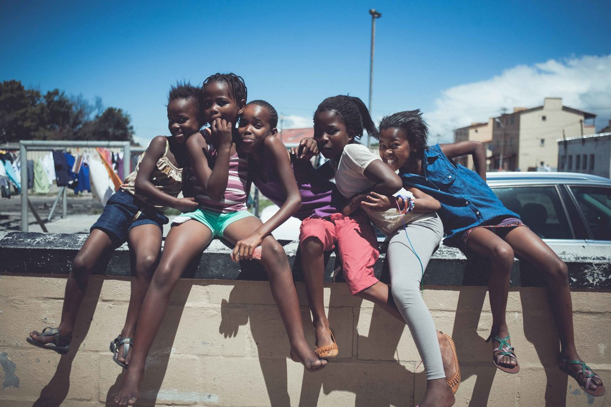

everyone has a voice
this is mine
find yours
STORIES by HUGH MOSNO
lindsey appolis, sipho mpongo & hugh mosno
heavy ge'koppel with one love
s/o to my parents for having sex that one time
focus pocus
when you’re sitting around feeling bad, mad or sad
the chances are one hundred percent
that what you're thinking about
is what is making you feel that way
there’s no other nommer
incremental love
the human mind is capable of limitless possibility
but with only seven subjects in one year
government schools has become a glorified
baby-sitting service
for parents while they work...
brewing boredom
the perfect bed for distraction to lay its head on
keeping them on a metronome of time & discipline
until they are ready to be let out of the pen
what did you learn today?
answer: fokkol
national thoughtcaster
why does someone still need
to schedule your information intake
I mean c’mon dood, get a life
reading between
words still need to be translated & understood
but feeling is shared without translation
feeling is the truest form of knowing
no sounds, no letters, no nothing...
just the subtle yet ever present vibrations
that radiates from every living thing...
words will never be enough
never
human analytics 101
how many hours do you spend online? do you evens know? do you evens care?…welcome to “human analytics 101” where we reveal our thinking of your thinking, with simple pie charts, infographics, percentage bar charts and other glossy visual aids. we’ll cover how focus and thought generation as resources can be held captive and how to regain control of what gets into your thought stream. “human analytics 101” is a free course that needs no textbooks or lectures, it requires only sincerity on your part to be objective about the quality and length of each and every thought that you create
the persecution of mary jane
its logistically impossible to prosecute or detain all the weed growers, sellers and smokers, but please spare a thought for the few, who serve as the example to the many
anoma lies
I’m searching for freedom from perspective and finding it might take everything I’m. why is it okay to use “I’m” in the beginning of a sentence but it makes less sense at the end?
something like a phenomenon
the entire internet at their fingertips
and still some find themselves
at a loss on what to search for
in which direction to lead themselves
hear ye, hear ye
people don’t want to hear the truth they’ve been lied to for so long that they’ve learnt to lean toward what they’ve been led to believe and because of the trajectory of this thinking mainstream media as an engine has curated a collection of minds that feeds off being lied to
harvesting the hype
its hard to see yourself as part of what it is
the peace that can be found in silence
lies hidden inside the endless tide of distraction
and the quintessence of its trickery
is to keep them on the edge of their seats
forever
the crux of the magic
me sounds so selfish
while we just feels better
them sounds so childish
while us just feels better
the right thing is often hard to do
just as good things are often hard to learn
love is not something you are taught
its something you remember...
what else have we maybe forgotten
the boy & the man
one day a young boy was walking... his walk had a distinct purpose as he was on a little quest to find out about this thing called life... he saw a man sitting on the side of the road and stopped to tell him of his quest and to find out if the man could help him in any way the man smiled and said i have just come from that quest and I have met many men, young and old and the wisest of the wisest always tell me the same thing love is the manual for life
born again
I take this now
to be my truthfully wedded wife
to love and to cherish
till death us do part
half the story
what you don’t know or feel
can be more important than what you do
looking back
sometimes we can see our mistakes
in the dreams of others
behind closed doors
long ago, I worked as a developer for one of mzansi’s digital agencies, I did almost two years with them & had amazing relations with everyone, even the haters loved me, but there was this one girl, who really wanted the “D”, she fuck flirted with me in private, away from the eyes of her peers, she let me know, in no uncertain terms, that she wanted it, but I gave her absolutely nothing, and her vagina couldn’t drum to that beat... she was my senior and as a result, could make my life at the office quite difficult, and that’s exactly what she did, she cornered me strategically with nothing but the flow of the workload, but aweh, I wasn’t phased, I’d been here before, then one day, shit turned to liquid and started splattering all over my work day, it had escalated to the point where she had used her “power”, to stall the flow of work for everyone as a way to get me to work double-time, and of course, she would have to be there too... but I was always ahead of her, I was tight with the designers, and so I asked one of them, “dood, how long does it take to finish a fucking template?”, and he was like “bra that shit was done yesterday and signed off!”, I was like “what the jas!”, I told him “send me those files, mail them to me now”, and he says “mrs bitch said I should only forward it to you in the morning”, to which I replied “naaier, send me that PSD now...” to which he replied with a smile, I go home, I kill the entire workload in a few hours and then intentionally arrive kak late to work the next day, I get a call from her senior, which is also her superficial facebook bestie, asking me ever so politely, “hey hugh, what time are you getting in, we got some urgent work that needs to be pushed out by 4”, I was like “hey you, oh that, no that’s done, ask hartseer-hond to check her inbox” *obviously I used her name, when I get into the office, I feel the heat & beats from both of their pussies, they were so caught off-guard that I had done the work, they had no words, it was beautiful to see them stumble over their own misguided intentions, that’s when I had it out with her senior and then spoke to our head honcho in HR, I told them “guys, she’s putting the client at risk, to play out her little fantasies...”, two days later, I’m charged with sexual harassment and no less than four, of the other female staff had taken a stand against me, using misconstrued emails, to enforce whatever direction it is their will had intentioned, but aweh, you have to pick your battles mos, so I take my two months paid vacation, spent loads of time at the beach, and then got back onto my bike... guidance disguised as misfortune
concrete jungle
she wasn’t accustomed to honesty or sincerity in such huge doses and so resigned herself to the fact that he must have wanted something from her she couldn’t see past her own expectations and was blinded by her perspective but all he was trying to do was be human... its almost as if, she’d never met a real human before
zeitgeist
everyday the same love happens
but all we see is the change
suiker huisie
cancer loves sugar
and thankfully for cancer
its laced into the fabric of our very existence
an ever present problem hiding in plain sight
a blinding force known to few as addiction
gavin s1 e7
gavin enjoyed how music reminded him
of the beat he failed to feel in his soul sometimes
gavin s1 e6
understanding that a murder or a rape was just the flowering of a thought
gavin began to unravel the gravity of his own thoughts
gavin s1 e5
following in the footsteps of a dream someone else had already had
gavin eventually lost interest
gavin s1 e4
scared of dying & scared of living
gavin retreated to fantasy
gavin s1 e3
thinking about everything he thought he knew
gavin realised that he couldn’t buy into what he did’t yet know...
gavin s1 e2
never ever imagining himself masturbating during marriage
gavin used a leave day to escape his reality...
gavin s1 e1
one of gavin’s biggest fears
was to have been born a piel
and to have died a poes
did you know
some one some where right now is dreaming of having the life you have
relationship advice
it either feels like home
or it doesn’t...
want love
its never something that you need to speak out its always something you need to feel out words get in the way sometimes but love feels the same everyday
the pigeon and the parrot
a pigeon lands on a high balcony he koo’s around and then sees a parrot in a cage, just chilling the pigeon says "I am free" "but I am fed" says the parrot immediately "to be fed is to be free" continued the parrot "to fly free is to be free" replied the pigeon "to some maybe, but to me being fed is life... I get my feed and I seed my song, this is my freedom, a freedom to sing all day, without worrying where my next meal is coming from" said the parrot "we both have wings but only I have seen the top of this building, and only I ever will" said the pigeon "it matters not to me what can be seen or not, what matters to me most, is that I am fed, so that I can seed my song…" said the parrot, ruffled his feathers and gave the pigeon a slight nod the pigeon flies to the top of his cage, lands, poops and then returns to the ledge "I am free to shit on your freedom and all you can do is nothing" said the pigeon the parrot remained silent for a long while and then said "I cannot make you see what I see, or feel what I see, and just because we have wings, doesn’t mean we’ll all take flight, sometimes they’re there just to glide you to safety...
the doorways be infinite
weed, ganja, marijuana, dagga...
its not that its getting you high
its only showing you
what your body can do...
the weed is just a stimulus!
your body can also
take direct instruction
from the will of your attention...
but focus is a muscle
that needs to be exercised daily
and it is only through feeling
that we truly know...
love is a oneness
that needs to be felt to be known
and when we understand through feeling
the lights go on & love becomes visible
in every atom of the eternal somethingverse
a story of love
a few years ago I met a really nice girl... we clicked & the sex was next level, the energy transfer between us was almost effortless, even the way we argued about simple things felt familiar, as if we’d done it before, but for sure the feeling was not foreign to me, it felt like a home I remembered from a when I can’t recall...
we made a pact, we saw each other in secret mostly and we lead seemingly single lives, we were focused on our individualities, we never lived together, sleepovers of course, even weekends, but very discreetly, our connection was not common knowledge and so remained untainted by anything other that what we ourselves tainted it with... but neither of us did any tainting of any kind, we agreed to always lift each other up, or let each other go, this is true love as far as we could see...
all I cared about was seeing her flourish and flower into the beauty that she already was, it was like a secret, but a beautiful one, and we cherished it more than any tangible thing in our lives... we developed a bond that is without distance or time, we truly became one, just being ourselves
today is our 4 year anniversary
this story is written in a future that never happened
semi sweet
I started picking up prostitutes in high school
I respect those girls
It takes a lot to sell your pussy
day in and day out
most of them
the ones I’ve crossed paths with anyway
are single mothers
or straight up bread winners in their households
because although you see them on the street
she has a bed
and a place she calls home
and some people that love her
and that hug her
and care for her
without judging her
a few months ago, I felt like a nsa quickie
and instead of reaching for my contacts
I thought I’m going to take a drive
for old times sake
I mission toward a spot
I see a nice young lady
she hops in
we’re off to mine
but its like twenty mins to get to my place
so I chat to her
and we become acquainted
she spends the night and I ask her if she wants to come back the following weekend
she says yes
but never arrived
a good few months later
I’m looking for another nsa quickie
and for old times sake I decide to do a drive by
and then I spot the same chick
at a different spot
but on my route
I flash her down
and she recognises me immediately
she smiles and gets in
she says
"yor, do you know how I was trying to find your place, I walked up and down for hours but I couldn’t remember where to go..."
I smiled and said
"you mos gonna see now..."
she laughs and says
"yorrr..."
she spends the night
two days later
she arrives at my home
shouting at the gate
I go out to open for her and to see what she wants
she has a tray of fresh hannepoot grapes
she says "I did bring you grapes…" and smiles
I’m like "thanks that’s really nice, but what’s wrong, is everything okay?"
she says "yes everything’s okay, I just wanted to see you..."
and I say "but I’m working right now" and I invite her in for some juice
because it seems she’s been walking for a while
when we get inside I tell her
"I don’t have money and you can’t just stiek uit like this when you want to"
she smiles and says "I’m sorry I just wanted to see you..."
and then I asked her "but why, what’s up, tell me..."
she can’t get it out
she says "I want the D"
I smile and say "I don’t have money sister..."
she says ever so seriously with a hint of seduction "I don’t want money..."
I smiled and said "that’s a first for me..."
so I said "just give me five minutes
and I’ll sort you out, but then you must go kanala, I really need to work..."
after a few hours, she leaves and I tell her
"you can’t just stiek uit like this… if you want you can pick a day and we can connect then"
I say "what day..."
she says "friday..."
and she’s been coming here like clockwork for the past few months now
she’s never since asked me for money or anything
she asks for nothing...
and because of that
I make her tea
I run her bath
and I massage her feet...
I sprinkle on some love
because I know what it can do to a human...
a winning formula
i expect nothing &
i always get everything I got
i take nothing for granted &
i am grateful for everything
growing pains
when you’re a child
being around people feels very normal
its as if we are all drawn to each other naturally
but as we grow into adults
we become so disconnected from each other
that we practically become strangers
living right next door to each other
sitting right beside each other
sleeping right next to each other
dead fly walking
thoughts are things
a thing is an ashtray for example
so if our thoughts are moved into form
and if a thing is something that came from a thought
and if you can move thoughts around in your mind
surely you can move things around with your thoughts?
teslanomics
man can connect his apparatus
to the very wheel-work of the universe
& the very forces
that motivate the planets in their orbits
& cause them to rotate
will rotate his own machinery
clearing the ear
i love my vernacular
i love it
i graan it
i grew up marinaded in it
its in me
i am of it...
but no, I'm not as gham as I might seem
if shakespeare writes about a murderer or rapist
would you associate his day-to-day character with such vile actions?
more than likely not?
if I can be afforded the same courtesy
then I will have been satisfied into silence
but aweh
visionaries
I will always and only ever be driven by feeling...
I have no "business plan" to answer to...
the best fucking plan is to just fucking love what you choose to do
but some people still need to see it on paper
they can't yet feel it into existence
some who envision their empires
fail to envision its end
sage advice
plus one day my taanie skiet me
a true lady, never gets caught
spilage
there was this woman I once worked with
she use to send flowers to herself at the office every week
and the card would always read "from a secret admirer"
using our reality to trick her fantasy into existence
and instead of planting seeds in her own mind
she tried planting it in ours
wha’gwaan
you can see clearly the amount of people
who exercise their bodies
the evidence is a body that is in shape
you can see clearly the amount of people
who exercise their minds
the evidence is a manner of mindfulness
mindfulness takes shape
when the spirit is at peace
what’s bothering you?
fleeting wounds
in 1976 a man known as johnny jumped from a moving van to get his cap that was blown back by the wind, the van was travelling at 260 km p/h, thankfully johnny didn’t die on impact but four days later in hospital, but by then he had already had his victory, he had gotten his cap back in one piece
we are all healing from the wounds of a fleeting perspective...
thunk funk
sometimes you are who you think you are, and sometimes you are not... you are caught "out of character"... as if you are acting for the better part of your life, its almost as if you're trying to be who you think you should be or maybe you're trying to be who you want to be perceived as? either way, you're trying to be more you... and every episode of your favourite series, or every repeat of your favourite track is either inspiring your soul, or quietly ushering you into distracted directions, mapping your mind to content that numbs the soul. the predominant quality of mainstream media is not designed to inspire, it is to distract, but a distraction from what?...
value your thoughtspace
brave thoughts matter
her mind was easily stripped for parts, sold to the highest distraction, nurturing a shadow of her truer self, succumbing to a life that none aspires to and still fewer overcome... struggling to remember what she had been led to forget...
masala steak pies &
pepper steak gatsbies
I asked a high school girl the other day, she has both her parents, a sister and an extended family that stretches throughout the region, I asked her, do you have someone in your life that you can go to no matter what, that you trust with your life, a friend that will go to war with you? she said no, she said no in the light of her parents being alive, how can a human with both parents and a thick woven network of friends & family still have no person to totally trust and confide in... this aloneliness, this feeling of isolation is a beautiful paradox growing inside our overcrowded communities, usually feeding on the fringes of big city lights... where does she go to in times of need? who can she turn to for that feeling of being loved or touched in a non sexual way? where does she go? who can she turn to? not knowing that what she seeks lives inside of her, she waits in hope for someone or something to touch her life in ways she never knew possible… she is my sister and we are experiencing this one love together
pick your battles
she was at odds with the harsh beating she had just taken, only a few hours after she had cut the ribbon off the brand new black convertible bmw he had bought for her surprise birthday party… I mean, it was just a few blue marks in her face, and plus, he was drunk she thought, the bruises were light enough to conceal with make-up, because nothing was going to stop her from using her brand new bmw, first thing in the morning, to go buy entjies at the garage... she is my sister and we are experiencing this one love together
the ceaseless pendulum
verily her forms take their shape from my mind’s lead...
what want can I know in light of such abundance
alpha bitch
she has him wrapped around her thighs, her pussy releases a powerful venom, squirted directly from her mentality, his meagre salary is defenceless against her every request, but he is just another pawn in her pleasure arsenal listed alphabetically in her whatsapp directory of willing tentacles, a pussy-licking army of worshipers to do her bidding… she is my sister and we are experiencing this one love together
state of the nation
CAFDA ~ Cape Town
yaasien has three kids... asiqah is 14, and willingly took part of a semi-violent porn video, with very murderous gangsters, several of them violated her at the same time and recorded all of it... the video eventually comes to the eyes of yaasien in the form of "bra, kyk net wat maak hulle saam die ding" - "the ding" was his daughter, and after crying for most of that night, he broke all the windows in the back of their home and smashed her face in the worst possible way
his wife moena, is a tik addict and has been since just after asiqah was born, she had two more kids with yaasien, moeed four and saqib one... moeed turns 5 in february and doesn’t have any formal identification... saqib's mother’s tik addiction is causing his spine to grow totally out of shape, but his first struggle was in the womb, where his mother ensured he was addicted to tik before his mouth touched her breast... a day after he was born, the withdrawals from the tik was the least of the doctors concerns... he had not been born with a naturally formed anus as a result of a severely underdeveloped colon...
where are the parents I hear the lady in the back row shouting, to you lady I ask, where were the parents of the minds behind the creation of the cape flats? the group areas acts? and all acts of ill will? we are the all of us complicit in the evils and good around the planet, we shall the all of us burn and we shall the all of us be born again, forever and ever, aweh
no returns policy
I experienced a moving feeling recently... but it wasn't like a flash of insight, it was like the slow coming to boil of a long brewing understanding, coming to fruition finally, rising to its fullness in my understanding of it... and despite and through all my humanness and the contradictions of this earthly life, I still strive to enlarge my capacity for understanding, so that the world might become transparent... they say wise men retreat into solitude toward the end of their lives, but there is no sense in retiring before undertaking the journey... we meet love on the way, and wether it endures or dies, it makes life meaningful
birth-of-thought control
putting me out of your mind
is the best way to kill me
but like some sort of god
I will rise again in your mind
and you yourself having killed me dead
you yourself, will think me back into life
karate water
the average beer is 98% water
beer’s main ingredient is our natural heritage
south african breweries in newlands alone
pushes out an annual capacity of 10 billion litres
but it uses almost 4 litres of water for every 1 litre of beer it produces
so almost 40 billion litres of pure mountain nutrient rich PH-balanced spring water
enough water to fill steenbras dam, is harvested annually
by the south african revenue services’ bestest buddy
& every wine farm in southern africa is jumping on the kraft beer brand-wagon...
and so we must prepare for a war of who’s is what and why
but we don’t really "pay" for water, do we
we "pay" for the convenience of having it tapped into our homes
we can harvest enough water, for an entire family, for an entire lifetime
in just a single season’s rainfall... with nothing but the stretch of the mind
or you could bore into the ground
or you could desalinate some sea water
or you could harvest directly from the clouds
but what price can you put on a birth right?
and to whom is this price owed?
all distractions are masterful teachings
and a distraction mastered is a territory conquered
and the territories be infinite
and the teachings be territories...
and despite all the numbers,
love’s main ingredient
is oneness
always on
we’re always writing...
we write with our thoughts,
we sometimes share it through our words,
which just points back to our thoughts...
kyk vir macbeth
how does romeo explain shakespeare to juliet?
trying to reduce the infinite to mere words, is a falling short so grand, that its depths run infinitely
sounds produce belief
let us meet on this battlefield
but instead reduce it to a playing field
so that our children may feel safe to wonder
as far as their minds can see
girls in the hood
"how long have you been selling weed?" I asked "yor long yong, long, sieker since adnaan them left" she’s chatting on her phone and steering the car, not really worried about the white line. a calm fearlessness worn as a scarf throughout her daily movements. she pushes a healthy 250 grams per week on average but it can sky-rocket without warning. a wad of cash sits safely in her left breast, of which she has double the d necessary for a descent camouflage. she dates gang leaders and hardened criminals who have years behind their name and balances it with her warm and extended family. her favorite hooks are "yussis man", "what was I gonna say now", "now check here" and "don’t talk kak" as can be heard in every hour of every day. her fearlessness is what struck me most, she’s quite tough for a girl and I’m not sure in her heart she wants to be "taken care of" as it goes, but I don’t think she’ll object to it. I prod further "what do you want to do with this business?" she smiles and says "yor honestly, I just want to buy me a nice car!"
cut above
hello. today I’d like to tell you about bradley anderson. born and raised on the flats, he’s well aware of the nommer. before take-off from df malan airport and at around 5 000 feet, he was still using words like "aweh" and "bra" but as soon as the plane reached a cruising altitude of 30 000 feet he was fluent in both the new york and californian accents, he had that twang thang going on, such is the acting prowess littering the streets of the 021. in 2001 he flew to london after 5 short months in new york, but the cherry on this little tart is that almost 15 years later, his new york accent is more entrenched and more authentic than the average new yorker, and his 28 year cultivation of our beloved vernacular, strewn aside like cellophane
fauxy lady
people who see nothing but blessings in their life, despite the most outrageous happenings, seem to be the happiest. most finding themselves in "situations", have foolishly tried orchestrating the changing tides, a fallacy born out of an ignorance and a carefully crafted psychology, handed down without much thought and absorbed in the same fashion.
only after the dust has settled and we have time to reflect that we feel, rather sense, the worthiness of the choices made, but even so, fucking up is the perfect synonym for learning, and the learning it seems never ends. your most valuable insight can happen while on your deathbed. is that a fuck up... or a thing of beauty?
add vantage
that thing between the young and old, zulus and xhosas, english and afrikaans speaking ones, jews and muslims, rich and poor, educated and under-rated, refugee and seemingly free, that thing between, that divides, that has the ability to chisel lines in our minds and instil beliefs more solid than rock, the same sort of lines we etched into the earth to divide countries, the same lines that are invisible inside of one love
withdrawls
your phone... always within arm’s reach, earshot at the very least, I myself prefer email-tennis and enjoy the pause between back-hands, but to not be in the know is to not be in the now somehow or is the opposite closer to the truth?
eye and I
yes I. one love. I and I in all I see and I do. I the we and I the me. I in all the birds and trees. I for one and one for I. yes I. one love!
girls in the hood: behind the scenes
I spent the entire friday night with her and acted as her runner, she was totally cool with it because her runner which is also her boyfriend was on a side-chick-mish and all she really felt like doing was being horizontal... her phone’s beeping becomes increasingly and incessantly needy from seven’ish up until just before twelve
the customers, a handful of them anyway...
thea, single, independent and ambitious, late 20’s, call centre manager, looks like she had a tough week or a poes bad day, her hair wasn’t ready to meet me, she’s buying a 50 rand bag of fairly descent outdoor, I tap the passenger window, she’s weary as she doesn’t recognize the runner, I shake the bag of weed through the window and she releases the central locking almost pavlovically – she looks like she really needs to smoke! I flirt with her, she don’t mind, and her initially car-idling haste is veered of course as I dish her some of my bestest mating behaviour, she turns off the ignition and reaches for her cigarettes without taking her eyes off the conversation – I now had an audience – but I ask her only what I need to know, under the cover of the wooing. ten minutes past, I end the conversation and exit the car swiftly. the night was just getting started...
lewis, regular customer, early 30’s, always complaining about the quantity and quality but buys religiously week in and out, he doesn’t mind dropping five hundred or more rand on a friday night for some good grade, he’s also curious about me, but not in a fear-for-my-safety sort of way as miss thea, he’s poes calm, takes his time, smells the ganja, crits, comments but in the end the nai is gonna buy it, guaranteed
keith, gavin, chella, drogba, kelly, candice, kelly’s sister, kelly’s sister’s friend and her bestie jade... no one older than 21... these guys come with two cars and a circus full of mense to buy half-a-gee, the person in their group in whatsapp contact with my sister orders one gee, so, she sends me out with one gee, I get to the cars and can see a cash count shuffle going on, which includes fifty cent pieces, they tally up seventy rand and tell me, "okay we only want a half rather" I smile and say, "yor bra, but a half is eighty!" – changing coke bottles lying on the backseat’s floor seemed like the next logical step for them, I tell them, "wait gou, I’m gonna go get a halfie" giving them time to get their story together
blurry doorways
people go back sometimes, its easier to fall back than to step forward maybe? a single step can seem like such a small action but it is the single step forward that slowly diminishes the want of the return to the k now n – the then now – one love’s changing beauty is ceaseless and happens one mystical step at a time – it always excites new parents, their baby’s first steps, what if that same excitement can be felt by every human, toward every other human, as they step toward one love. could be nice
noice
visions of love in my wants and in my dreams, feelings of you in my knowing, your thoughts though still unseen to me, and when our energies eventually collide, impossible will it seem the struggle to contain your being under the weight of your want, and the slut in you emerges victoriously, as the gentleman in me goes for a long walk
the roadtrip playlist acid test
if you were on a long-ass road trip, and all you could listen to was your twitter or facebook timeline, played on repeat, do you think you’ll get bored of your own curated kak? muklik... love the kak you create
thandisizwe jali
I met wayne at the same intersection, everyday, rain or shine, on my way into work, and everyday he wouldn’t ask me for money, he’d ask me for work, without fail, never, not once did he ask for cash, not once.
wayne came to cape town from the eastern cape looking for work, money, gold and gifts to take back home to his family, he thought in a few years he’d be leaving cape town with a drop top bmw, a boot full of cash and a jus pair of shades, but the reality he was finding to be much harsher than what he’d expected. the skurrel life is taxing on the soul and the body takes a good few knocks along the way.
I watched a young lady shave 10-15 years off her life just by living and sleeping on the street for only 3 years, no warm slippers to push your feet into as you drag them and your half closed eyes to your underfloor heated bathroom with heated toilet seat and double ply toilet paper, but aweh, nobody’s pointing fingers, somebody is just writing words and another person is reading them.
so I invite wayne over to my place, not to work but to come chill. I give him my address and tell him that if he can make it to my place anytime saturday morning I’d put together a cv for him, print off like a million copies and try to fire his drive... we had some beers, i made us a jus lunch, we smoked a spliff and all the while trying not to "inspire" him but to "connect" with him, I told him that if he wanted he could work in the garden every saturday for some extra cash and after about 2 months of that, a friend arranged a space for him in his furniture factory in maitland...
four months later my buddy calls me saying "kyk hieso, this bra is catching on kak" no-show monday’s, awol-friday’s and drunken master nommers for the rest of the week, but aweh, what could I say, I told my buddy to treat him fairly and obviously he had to let him go, so back to ground zero wayne goes and again is without work for another 7 months this time... its tough bra, no family to lean on, no real friends, no moral support, man alone... pretty much
he eventually shows up back at my place, saying that he fucked up and that he really needed a job... its like taking back a cheating husband, you wanna believe the nai, but you mos know – I wys him not to worry and don’t make him feel worse than he already does, I give him better options this time, instead of hand-delivering his fate to him with a number to call – this time he needed to push the stone himself – and push he did, his girlfriend was now pregnant with his second child. he lives in masiphumelele with a friend and she in langa with her mother, the kids are fucking beautiful... she doesn’t work and at the moment neither does he, but somehow it works
tough start
most nicknames are earned, others are handed down, sakkie earned his when he was just two days old, his malformed colon had curled inward as a result of his undeveloped anus, the doctors only able to reroute this deformity once he’s a little older, leaves a tiny bag hanging just outside his infant belly, a transparent reminder of his mother’s tik addiction
he's doing well, he looks like every other new born, only when you strip him down will you notice he has no anus and the bag hanging just outside his tiny belly will connect the dots for any on-looker as to why. his dad says that he just eats and eats because the programming associated with the hardware didn’t download the full update, so the messaging to the brain to stop eating is out of whack. the doctors are going to tear him a new one but until then, its a massive saving on nappies and every time he lets out a fart the little bag attached to his belly inflates and his mom immediately releases the wanting fart... his name is saqib, and we are experiencing this one love together
hammer falls
possessed by perspective, her dreams of possessions echoed through the ether.
possessed by one love, her internal vocabulary returned a no results found for the word "possession"
shorty pyjamas
contains traces of coconut & slang
for many people in the 021 sunday tastes like koesiesters... every burb has a typical titi serving up coconut drizzled love come sabbath morning, like aunty joghra out in pelican park, her granddaughter in pink pyjamas, is standing in your typical titi’s kitchen, waiting for a freshly dipped batch to be delivered to an old lady 6 doors down, seated and standing are three neighbours but nine plastic containers, as your bowl not your presence represents your place in the queue, I’ve hardly ever seen her need to provide change, the client or container is usually armed with exact cash, there’s a small tv in the kitchen which keeps her clients occupied for the few minutes they’re wafting while waiting, one of her kids has just gotten up and making his way across the passage to what must be the toilet, he gives a very sincere but voiceless smile and wave... there is not a sign outside her home or in the street... and still her legend grows... not every one can make consistently lekker koesiesters and this particular morning I decided to pit the three top aunties in pelican park against each other... I’m on my way to the third aunty in a one kilometer radius that’s making koesiesters this morning, outside her home is a young man, who seems to have arrived directly from his saturday evening, leaning against the low fence of the aunty’s home, stuffing koesiesters into his mouth, gazing into the sunday morning distance, I approach him slowly, with a smile and hit him with "... for most mense in cape town, sunday sieker tastes like koesiesters nuh?" he chews, nods, smiles, swallows and then says "aweh, light us a entjie and then we continue this conversation... "
the koesiester sunday league represents the top flight in one of cape town’s oldest pastimes... and honours once again goes to shaheeda out in woodstock with a landslide victory over her closest rival titi yasmina out in goodwood with a whopping 2145 bakkies during this past sugar season. a total of over 14 000 koesiesters and at R2.50 each that’s about R35K for these past six months, working mostly on sunday mornings between 5 and 10 am... next season is looking wide open for newcomer joghra climbing to fifth place after a terrible start to her season, when asked if she could grab first place from shaheeda during next season’s drizzle & dip she simply replies "Insha Allah"
dala rot, just another day at the office
he intended to kill that security guard, but there was no real reason to... he takes another drag of his entjie while rolling off some toilet paper, he parks it between his lips and as he wipes his ass, thinks about the heist he was part of earlier that morning, the rush of it... he can hear the music playing in the next room, his ice cold beer waits for him on the speaker... he flushes, washes his hands while checking out a pimple on his forehead, he leans in, looks closer at it, pops it using one hand but two fingers, looking around first, he walks out the bathroom and as he picks up his beer with his entjie hand, politely asks... "naaiers, wa my fokking nivea cream... "
he is our brother, and we are experiencing this one love together
the misdirection of education
the revolution is cunning, but real revolution is where you would give your life for what you’re standing up to defend... that’s a revolution naaier, not tweeting the revolution from the sidelines and then grabbing sushi in lower main road to discuss your disgust at the life you’ve already bought into... most people paid to put petrol in their fairly nice cars to get to the uct campus, why not free petrol? where does it end? why not take your degree that you deserve for free and use it to create a company that produces products and services for free... education should be free, but for fucksakes, take a real look at what you’re paying for, at what you’re buying into... are you honestly being educated? nigger please, that’s just third party validation of your skill-set... that’s not a fucking revolution, that’s more like going around in circles
and after we kill the boer and restore all his injustices, we must travel further into the past to make sure our endeavors are not narrow-minded attempts at feeding our fickle fantasies of transgressions within reach of our grandmother’s eyes... no... we must fight a bigger fight than that, one that goes back to transgressions against all humans that have gone before us, billions upon billions of minds and heartbeats, who lay as ashes, forgotten, but only for those who see with eyes alone... if rhodes must fall, so too must the entire building and erf that is uct, because it was his money that built much of the university, and after the uct erf is flattened, you must flatten rhodes memorial, you must kill his family, the businesses, roads and clinics he built, you must kill all the books he wrote and you must kill his spirit, and when you’re done, without realising that you have killed a piece of yourself, will you feel more alive then, will your reward be just, or will you be just like him, only standing on the other side of your own mirror, looking at him, but seeing yourself... education should be free, but we should maybe reestablish what exactly education is before we light the fuse...
loves knows no justice,
justice implies a side is being taken,
and one love knows no favourites unfortunately
god does not look less favourably on the cheetah who killed the young buck to feed her cubs
show me a blueprint for the now you wish to change and I will show you mine
show me the emotion you invest into your ideal and I will show you mine
show me your love... and your revolution will cease to exist
#loveMustRise
#expectationsMustFall
but aweh
a day in the life of the modern day ant colonies
*switchblade *ninja nommers
"I’ll only cry for someone I care for... " she added while subtracting herself from all other humans, hard at work again was one love’s cousin, selective love... tief... the niece of the infamous selective hearing... she continues "... nai but really man I can’t vriet that tief, she work so on my poes... but yor her hair do look jus ma bru... fuck... " admits zennifer... she and burnherdebt, who was fondly known as deb, decided long ago, never to walk in anyone’s shadow, that if they failed or if they succeeded, at least they’ll have lived as they believed, and no matter what they took from them, they couldn’t take away their dagga trees... because the greatest grow rooms of all, is happening on the atlantic seaboard with the cape flats hub of grassy park in close contention for second place, the current cheese hangover being experienced in the 021 is being replaced by variety... and is fast evolving into a thriving home growing haven for young entrepreneurs, as well as seasoned smokers looking for better consistency from their experience & wanting to be a part of the growing process, and of course there are many of those that just do it for the monies, but there will mos always be that bra... are you that bra? I am also that bra, cos I am mos you, and you are I, and I and I be staying away from such naaiers... there are many paths to the peach tree, but it takes just one naaier to make you in your poes
use your thoughts to create love my niggers
*school bell rings
jared: thanks teacher jacobs, I always like your stories...
tj: remember to love jared, even the everyone
jared: *peace sign
moenira: shukran teacher jacobs, you know you would make a great muslim...
tj: am I not a great human?
moenira: I suppose you are
tj: have a lekker weekend young sensai
trish: teacher jacobs why do we always want to know why?
[as he walks with her toward the faculty lounge... you mos know]
tj: wanting to know is like walking trish, every question is a step forward... forget about the answers though, just keep asking smarter questions... does that help? ok look... basically, until you are one with love, will your want always be, but when you cross over the boundary that ends your wanting... at last have you arrived at being...
trish: thanks for being the best PT teacher ever mr jacobs...
tj: one love... enjoy your history lesson trish
*peace sign
koppel
most people it seems don’t really wanna be sticking around earth for too long, they ride their body, mind and spirit into the ground in a matter of decades and even more people have already given themselves an expiry year sub or consciously... not me bra, jus, I smaak to be here, I graan this jol... what a blessing it is to bear witness to the now, to be able to feel all the stuff that a human can feel, its kak that you only get one life, but I think its jus that you also only get one love
bikology
I fantasize about leading the charge of an entire army
with nothing but pen in hand
toward certain death
but before I do...
I will love
I will abandon fear
tear its garment from my mind
do this for my self
for the ones who will still come
for the ones that have already
to free my self from anything outside of love
to pay my debt for the life gifted to me
I must love
shoulder to shoulder
I grew up in a mom-fearing home and only when I become a giant boy did I meet the girl behind my mom, and the boy behind my dad... I wish for all young humans, to have encouragement and inspiration as regularly as breakfast and dinner and to be showered with loving intention, all the beats of your heart
1989 – PILOT: s1 e1: sara, protector of ojila, daughter of kiel & oni
deep in the south indian ocean. 2021
they have their own "everything", their own internet, their own source of limitless fuel, their own everything... the various social, economic and political layers that unfold in every country is of no real concern to the line... because it is their laws, written to protect their money, created to sustain their mentality... that is in motion
with homes in every province in most countries around the world and privy to a transport network few humans know exist, their new-age technology pales in comparison only to the mastery of their telepathic and kinetic abilities... their opulent lifestyle surpasses the superficiality of mere brands and as each new-born enters into their world, a planet is gifted to them, ownership transferred by the authority of the gift giver’s will alone... the real estate game has long since moved off the face of earth into the furthest reaches of our milky way
the families never fraternize with the general population, ever, and steer clear of any main stream anything, they are not off the grid as it were, they are beyond the reach of the grid... this is not a social event, this is a family affair and their opulence has afforded them a view of the planet that leaves no room for day time distractions of any kind... there is much to conquer
chaperons have a lineage treasured and valued as highly as any member of the line. Sara is an exquisite human being, she speaks hundreds of languages fluently, including signing, which she used often as a child with her siblings... she is skilled across vast philosophies and numerous disciplines... a chaperon is chosen and gifted as the right hand to every living member of the entire family, it is a life-long bond, a protector of equal caliber, ready to die for the longevity of the line
Ojila, is the eighth daughter of Kiel, a six year gap exists between a shaper and line child, an ancient birth rhythm is kept in sync by chaperon families all over the world, there are multiple chaperons to choose from for any one blood child birthed. Sara is the only chaperon to ever be chosen at five years of age because of her undeniable brilliance in all manner of adaptation...
Poghi is chaperon to Kiel’s wife Oni, she is also Sara’s mom and can outlast anything thrown at her. while growing up Sara’s mom would intercept her thoughts midstream and then say out calmly, "... sara, stop messing with your thoughts... " – it scared her that her mom could see inside her head like that, she remembered being excited at the prospect of being able to do such things to other people one day...
while a few million humans on earth collectively mourn the death of a super star, Sara and Ojila prepare to leave for the south of the planet and then onto a submarine hike of the trenches close to saint helena... one of their probes had recently discovered a new cavity just below the crust, closer to the old south end, that leads to a water filled well of unearthly beauty, unlike anything they’d both ever seen before, pure and perfect drinking water almost as old as the earth herself, this would be their second visit but first excavation... their excitement was in sync
omg
as a young girl, she fantasized about not having enough video material with which to create a moving throwback of her meteoric rise to fame, when that day would inevitably arrive... it was thoughts like these, that sent her mind racing
very much so
I was always fascinated by wet dreams growing up, the ability for my body to ejaculate with thought alone, powerful stuff right there, pointing the way to our super human powers to affect the physical... with just a thought
please distract me
if his pacing wasn’t an obvious indication, his tone, even just the look on his face made clear the hand to ear combat he was currently engaged in, and on ending the call, flinging the phone toward the heavens, he releases an inner eruption of a three second long "... fuuuuuuuuuuuuck!!!!!"
leave for your senses
"I need to take some leave... " she reluctantly reminds him, they were in the same earning bracket just a year ago but now he was her manager "I might need the following monday off too" she adds, and all the while thinking about how she managed to land herself in a job that requires her to ask permission to live her life... "you can’t take off the monday too, jenny already put in leave for that day and we need someone on standby cindy" he answers while continuing to type and face his computer screen... she rolls her eyes without him catching her "that’s fine, I need those other days though please" she says in a subtle plead of the voice, he looks up "if its quiet on monday, you can leave at twelve" he tells her, affirming his domain of power. "why’t the poes must I come in for three fucking hours, when we both know its gonna be dead on monday and this poes still want me to drag my gat to work... what a poes!" she thought to herself as she smiles to him saying "thanks so much keith, that really means a lot" as he smiles back with forced sincerity
straddling back to her desk, before sitting down her collegue leans up and asks "did he give you the monday off?" she shakes her head and sits down, keisha smiles and helps to steer her attention "don’t worry about him, did you hear back from that other company yet?" – "not yet, but I really want that job you know, it’ll gimme the flexibility I need to get my own thing off the ground you know... but my exit strategy is already in gear sister" as they mimic high fives from across each other "... there must be a better way to live sister... " she remarks, tucking back into her computer screen, physically present but light years away...
these are the days of some lives
circles
when I was a child...
I remember my uncle always bringing his hoes to our family get-together thingies, he was about 45 and she had usually just put her pen down to her final high school exam paper, his smile was permanent
I remember taking a sip of my dad’s beer and a drag of his cigarette, when he’d dart off to the toilet, I wanted to try all the things he was doing, I wanted to do the things my hero did
I remember getting a huge blow to the face from my mom, these could come at anytime, but the loving intention behind the reprimand could be felt through her hand, as a man looking back
I remember kissing the neighbour’s daughter behind our house, even at 3 I was a horny bastard, but she and I are great friends today, mostly because she knew me, when I was a child...
consumption : creation
consumption could lead to inspiration which could lead to creation, but consumption to creation is a ratio that few have in balance or care to mind... fruit takes a long time to produce, and is eaten in just a few minutes, sometimes a few seconds, and just so an entire lifetime could be shaped for the purpose of just a single second, a moment, in a future wanting to be called now
many years later
questioning his authenticity, she was instantly cured by his confidence, and the lifetime her mother had invested into her catholic indoctrination had all come undone, with nothing more than the blood packed head of his circumcised member and that confidence of his, or was it her weak mind that inflated her perception of him, either way... he himself was a test not of her conviction, but of her mother’s perspectivelessness, to love her unconditionally, withstanding love’s unlikely unions...
an impossible hurdle for most in the quest for one love is perspectivelessness, a long forgotten art-form practiced now only by a few cats... when we dress love in religious context, forever there will be a side to choose, religion’s trickery masking it’s greatest feat... division – the arch enemy of one love, the brother of distraction, the godfather of tribes
sharifi
for a while I worked for this iranian guy, running on strictly five senses... plus now I come to work, I pass him in the middle of the restaurant, just us two, I tell him with my bestest english accent "good morning sharifi!" he just carries on walking past, I thought he must have been preoccupied, but now I put my stuff down, I apron up and walk toward the outside to start setting up, I pass him in the middle of the restaurant again, I skiet him "good morning sharifi", the nai skiet me "...I heard you the first time..."
proximity warning
globally you have a 91% chance of falling-in-love, getting married to or fucking another human in a 50km radius of where you find yourself. down here in the 021, the odds drop considerably to a dismal 86% chance per 10 km radius... do you really love her or him? that’s not eintlik the right question, what you should maybe be asking yourself is, did you sell yourself short of a fuller human experience? resist the urge of becoming just another statistic, rather try something exciting like cutting your gatsby in six next time, its just easier to handle
settle for love
shout out to all the peeps that will never know the internet or ever read anything online their entire existence and still manage to have a superior human experience... you are the envy of all 9-to-5-ers everywhere
impressinor, new words and kak
[scene: muinzenburg beach, surfer’s corner, high noon, great weather, good surf, the beach is poes full, three friends, parked in a new’ish suv]
"... the best way to wake from any sleep, is out of your own, gently maybe? but out of your own body’s rhythm is the best, I skut, I don’t graan mense that wake you up so wild wild wild... "
"but aweh, judge poes gevriet, you mos also always get so technical... so then onto the subject of impressions or being a prisoner to them, or both? introducing an impressinor, fixed in a trance like life of permy wanting to impress the ouens, so much so that all the kings ouens and all the kings mense went blind... I can mos also fucking make up words... . tsak!"
"bek!"
"first impressions impress... repeated impressions pave... inbred impressions last... or something like that?"
"yay first impressions last for a second sometimes naier... for an impression to last foreverinty would require the changing of the hands of time
to overlook the perfection of that first impression, that you sieker think is sooo kwai, and you sieker jus if you think that I’m gonna live my whole life by a little sentence – says peter"
"that’s how you always wanna get out of a moerse kak praat session you nai – says rory"
"but can you see, it work befok – says poes"
"but aweh"
"your hair look kak with that mentality"
"nai the ouens don’t mean to swear but try to engage the brain atleastens man yor"
"its like my bra blade-of-grass say, we already in their heads, now you must come check, what is the ouens koppeling while they not looking still, a self extracting executable, locked in a verse, sitting in your head, waiting to be triggered by a bomb of hook, as simple as AWEH MY BRU! – love recognizing herself"
"but aweh"
"why must we brag? why must we wear a jus suit tailor made pleat nommer before this mense take you kop-toe, aweh its kwai and stuff, but its mos not essential, not really"
"nai you right bra, help your brother rather with the school fees bra or even better, take the lighties out of school and teach them well and let them lead the way"
"kyk hieso"
"bonus points for helping your brother without getting caught"
"you then wys"
"but aweh, nobody smaak to play that game mos"
"is that cuppy loaded YO!!!!? "
"plus now she skiet me! HEY!"
"bra, I’m like, just KAK cool and calm... .I’m just like, but with a MOERSE pause first – hey – I say it in small caps bra! she’s sieker thinking to herself: oh my poes, how the poes can anybody be so fucking sexy"
"but when she asked me for a light, then I knew: STICKERTJIE!"
"my bru she asked you for a vark lighter, how’t the jus does that make a sticker?"
"she’s a fucking stickertjie, you can mos see"
"what can I see?"
"yay, you just being difficult, the thing is a stickertjie"
"yor now she’s soema ‘the thing’ why must you be so rude"
"yay your poes gwala my! she will still become wys of THE OUENS, you mos know how THE OUENS dala, you mos know how THE OUENS did dala the NOMMER!!!"
"yay hou jou bek you talking through your naat again, pass the vark spliff you nai!!!
"but aweh"
"how’s tiema them?"
exhales
"that mense’s house burnt down bra!"
15 minutes away, kassam
he spots ryan standing on the edge of the grassy pavement, waving gangster signs in the air to an imaginary giant opponent, irshad slows down, the car glides to a halt, ryan opens the passenger door and greets irshad with...
"why you listening to adverts? where’s the aux rather"
"there on the side, just feel there"
"aweh, got it... hopa!... we lines bra, we already kak late"
ryan pumps up the volume to forty five, the dopest hip-hop beat plays canvas to the kakest let-down lyrics ever... feeling for his lighter he asks
"did you bring that cuppy?
"aweh here" feeling for it under the steering wheel and handing him a glass pipe, half smoked "there’s still a bietjie in there, keish it properly, don’t waste, that’s grade naaier"
"easy bra... I can mos smell"
"is she coming?"
"aweh, keisha said she’s coming with kelly... you in love with this thing nuh?"
"are you jus, I graan her aweh, but not still heavy days bra, that’s all"
"yay, don’t talk your poes... you soema making trips to durbanville without asking her for petrol money, that’s heavy days bra!"
"its fokkol, I was togies going that way"
"ja right naaier... "
"keish that thing man, you got time to talk kak and rack another one from that bietjie in that stukkie paper there in the cubby, got that from adiel last night"
"yor bra... how’s adiel?"
"balling bra, that nai got him a monster drop top merc, looks poes mad bra, but only a two-seater, you mos know, just room for one more... "
"are you wys?"
they both give a road-facing smile and after a few seconds the comfortable silence is broken...
"you got entjies on you?"
prince charming boytjie
so she said to him "boytjie, if you think that I’m gonna give it up for someone" as she looks him up and down with her index eye "that look like you!!! then you make you kak late, I nogals don’t operate with losers... oh my word" as she turns to her friend seeking unison... her friend stamps the letter just delivered "... ja look how you look... go away, you boring... " gavin just smiles and offers her a simple flower from behind his back, made of three two hundred rand notes, origami style, she smiles, the friend smirks... and girly asks him now with a different tone and body language "... did you make that?" [translation: do you have more of those specific flowers in stock boytjie] ... he just nods and smiles... boytjie understood his deficit in the player’s arena early during his school years, but the idea that cash can koppel pussy stuck and grew, I mean origami cash flowers, let me tell you, the kinnes graaaaaaan it, especially when boytjie skiets them "you can keep that one... ."
and so... while gavin’s legend grows in the burbs, lot of girlies across the planet are permy on the skurrel, for their own prince charming boytjie...
the beautiful south
I love all humans. I’ve felt that feeling since a very young age and as I grew up, I realised many of the humans around me didn’t share the same sentiment. I was forced to practice my love in secret...
as a child I use to let the street children into our home, I used a whole loaf of bread, all my mom’s cheese, tomato, lettuce, mayo, s&p, sliced in triangles and packaged in paper towels. my mom asked me "what happened to all the cheese" I was like "I don’t know, I did take a piece but not all... " it was seldom more than a talking to, harsh price to pay to feed some seriously hungry mouths...
when I married this trend had escalated to allowing vagrants to use my home as a pit stop, a shower, shave, and a hot meal with a take-away and whatever else I could help them with. one day one of the guys I was helping had not had a hot shower in so long, he used all the hot water in the geyser, soaking up every last hot drop, the bathroom wreaked of his scent and that’s how she found out. she was like "did somebody take a shower here today?" I was getting sloppy, not cleaning up my tracks like I use to. I couldn’t worm my way out of this one, she was on to me. I told her "yes, he’s a friend I’m trying to help, he’s just going through a bad patch" she says "but where does he live, why does he need to shower here?" quite a reasonable question I thought and I was like "he’s homeless" she was like "what do you mean homeless?" I said "he’s a vagrant living on the streets, he just needs a hand up" she was like "I don’t like it"...after that, the showering thing had come to an end. I mean, I could respect that...
I try to see all humans in a 1 minute high speed documentary, I see them being born and then chronological snapshots of their lives leading up to the point of me encountering said human. I’ve seen the good they’ve done and although most vagrants are lost, they are here with us. being lost on the street and being lost with a positive bank balance is still lost. what exactly is an ideal human meant to look like anyway... and an ideal world? what does that look like? to me its all the same beautiful mess, the same beautiful truth and together we make up, what it is...
brothers in arms
pang joined the 26's when he was about 16... his naked body bares the testament to his journey. when he left the number, they cut out the numbered tatoo from his chest. he’s been married a few times, has 5 kids from several woman and is a builder by trade. sometimes we still connect to play some fifa on ps, with a joint and some snacks. its a pretty chilled environment, with kids running around and vibrant conversations within earshot. we have the spliffs in private, away from the little ones. I asked a friend the other day "would you take on another man’s son and love him as your own?" his answer was "no", for most men this is really hard but for pang this is not easy, its natural. his love far outweighs his most evil encounters. a rare breed of human, able to foster care and love to any human, irrespective, and for all his shortcomings, this single trait makes him a giant among the best of humans
menta and kaylee
loyal kaylee, first time to-be offender, finds herself sexually isolated as her husband suffering from cancer, has lost all manner of mojo. after years of deliberation she musters the courage to dip her toe in the sea of infidelity. she cautiously selects a suitor, arranges a meet-up and then on the last minute she backs out, feeling a bit paranoid she tells the suitor that her husband is coming home early. the suitor is married too, he understandingly accepts her answer and leaves. she regrets almost immediately having let him go knowing that she is the reason he left, having summoned him there on urgent business, business that could well have taken the better half of a minute given her current critical situation. kaylee shared her story with her close friend menta and after listening to 10 minutes of superfluous detail, menta turns to her, looks her up and down and says "gurl... as hy vir my sê... let’s go for a drive... is my penti al kla uit getrek al... "
prick your friends wisely
did you ever wonder where rich people go to prison? I mean if I just draw on some very crude statistics we see that in pollsmoor 91% of all inmates come from a maximum combined household income of just R6000, how is our fortified constitutionally sound judical system (judical there translates to preferentially judgerag) failing so many of our lower income offenders? a government advocate once told me that the state would be willing to let a "tax-paying" citizen free relative to the charge, this is an actual consideration! such a system is surely not sustainable but such a system is already in motion, and all motions have rhythm, and all rhythms have beats, starts and stops, the rhythm is gonna get you naaier
love leaves a mark
did you know an army that will kill on command, can be bought for a kus and a button on the cape flats? a bra was wysing me he got offered a playstation for R70 the other day, the tik koppe were having an everything-must-go clearance sale and kyk hieso that mense is negotiable on that kroon still, muklik they’ll take just R50 evens, but that PSP must go, jy wiet mos... is the tik kop any worse that any of us though? not a fok... some mense are causing more damage just by choosing to think the thoughts they think everyday, they don’t care how their thoughts validate and perpetuate the perceptive and physical reality of the collective, they’d rather wys you to hou jou bek, to put it louder, to pour it stronger, to roll it faster, to cut it finer, to fuck them harder. I just wanna send a special shout to all the victims wallowing in self-pity, I feel for you, but you’re on your own while we help out the 100 000 or so infant babies born with HIV, now think about the 200 000 or so men and woman who came together to hand a death sentence to so many innocent humans, including themselves... sexual healing mos
san genocide
when people kill people, then you know something isn’t irie somewhere, like a red light or an alarm bell should be going off but that mechanism is clearly fucked. why did all the indigenous peoples of all the continents need to be wiped out? resources ultimately, that’s pretty much the long and the short of it however many years you might care to debate it some more, that and a healthy does of hate, I always think to myself, when I see an impoverished light-skinned person of age in south africa: there’s an example of someone who didn’t make the most of their time while they were "in power"... but having any measure of power is secondary to the capacity of your mind to be able to wield it, irrespective of race, class or any other categorisation you care to administer
an 021 love story s1 e1 - somebody lit a candle
spooned in his arms and after almost eight minutes of silence, he whispers the words that she was needing to hear from him... "... you smaak to koppel feelings?"... he could tell by her kiss that she was bets
an 021 love story s1 e2 - whole vark day mah bru
"I missed you, nai like really, I really missed you" he woos "you just hornsies again and now you wanna come be all lovey-dovey, get off me... " she jokes "... see, you must always come with that negative vibes, can’t you just go with it? huh? I’m soema not gonna share my chocolate with you" he threatens "I got my own chocolate charlie brown... " she mocks trying to reach for it in her bed side thingy "you mean you want a stukkie of my chocolate" he taunts as he waves her chocolate bar in front of his nose "yay! give it back, that’s mine... " she demands "see, you must always come with that neggies vibrations, can’t you just go with it huh?" he smiles as he leans in to kiss her, she turns her face and he finds her neck... but after seconds she concedes that the chocolate has become a now-now snack, whispering "... is the front door locked?"
an 021 love story s1 e3 - do I look fat in this jeans? no baby your hol still look lekker
"just take this chips away from me" she pleads after finishing almost the whole bakkie of mexican chilli "... you pretty much finished that by yourself" he jokes "don’t talk kak" she warns putting more chips in her mouth "just fucking finish it man" he says "I can’t... I can’t... I really can’t" she mumbles, putting another few chips into her mouth "... i’m on a fucking diet" she warns cleaning her salty hands with the sides of the wrapper of the chocolate she’s about to murder, and once she’s been fed, she’s gonna want her dose of cuddles that morphs into his fingertips on her bareback, writing her illegible love letters with the softest of touches, lulling her to sleep... she graan that kak!
an 021 love story s1 e4 - the younger brother
just a month ago her hair was being used as reins as she whispered "don’t stop... " into bruce’s pillow, and then, the ouens come here she’s shouting "I do... " into the glint of a diamond being held out on lee’s bended knee... but an urgent call from his stomach reminded bruce of three pieces of chicken in the microwave, plus there was still coke in the fridge also... as he tears into that first succulent leftover his stomach sends a message to his brain, that screams out "don’t stop... " - substance has long since been replaced by various flavours of fleeting on fast forward, its then lekker
the sound of words
real value is hard to find... most of the information you consume is gossip, he-say she-say they-say they-do sorta vibes. what real information came by your way today? not something repurposed, regurgitated, reconditioned, redesigned or repackaged, new information, an insight even, not into a demographic or a niche, but an insight into it all
the lying king
lions are poes mooi, have you ever seen one? up close? fucking poes mooi, any african lion alive today is part of a long line of points, honing their lineage for almost 1 million years, the lion has more respect and is more at one than more than 5 billion single human beings, the lion is singled out because it is a commonly used to depict strength. strength is a beautiful trait, which all lions possess, what desirable trait will the overwhelming greatness of humans come to represent?
the hayflick limit
about 50 000 years ago, how did anyone know how old they were? how did they keep "time" as we have been bred to know it... it was mostly just sunrise and sunset, sure most had man-made time-keeping systems but they didn’t have information systems of records that we can use to backtrack into time to accurately gauge how the average life-expectancy has truly been affected over the course of time. the default settings for humans are quite remarkable, given the right amount of food, light, water and exercise, humans can grow and live to 500 years and more, far-fetched yes, but only to the 100-year perspective. the 100-year perspective cannot see too far into the future and too far into the past, they see mostly everything that revolves around the time of their lifespan, within the allocated 100 years they’ve been led to believe is possible in one of these human bodies. visit distant planets, go 100 000 years into the future, travel back in time, live a thousand lives and then come back and tell me that humans living to be 500 years old is impossible, show me a human unwilling to entertain such notions and I will show you a human in fear of his own beliefs being shattered by the noise of limitless possibility
anonymous
most people write for themselves, one or a few hundred thousand humans, there is never a guarantee that your words will be met by all that are living, we do it for the love of the few in the hope that the many will, at the very least, remember you and your story... and give a fuck
run from the cure
I sold cannabis for a while, most of the people I sold to were friends, family and everyone else was separated by only one degree from either the friend or the family member. It was a network based on trust. I got to meet so many people, I use to park off sometimes for longer than I should have at some people’s homes and of course, the women, I encountered and hooked-up with some very open-minded women along the way, it came with the territory and I didn’t mind... one day an old man called me, he introduced himself as fuad and continued to tell me his story. he was 65, a staunch muslim and had been diagnosed with cancer. on receiving the news, he embarked on a mission to prolong his life. he never smoked a day in his life. he read, researched, phoned, emailed and wanted me to organise him a bulk of cannabis that he could use to extract the essential ingredient and use the oils to treat his cancer. he died last year. there is a law that says this man is a criminal for pursuing a way to prolong his life. the law is unwavering, it doesn’t consider the exception; it can only enforce the rule. such a system is prone to health issues, as is any system that cannot adapt fast enough to supply the needs of its parts...
nothing will deaden the common sense of justice, nothing will separate humans so much from the general feeling of his time, as separation by class. when a human cannot sympathize with every kind of human then the state lacks oneness. the general feeling of the people is unexpressed because it has no common organ of expression and you obtain in laws not the living movement of the many but the dead traditions of the few
in loving memeory of bertrand
words without music
love from the 021, this is msp FM 87.5... shout out to dark wing duck... the soundtrack to my life is stillness. a life where a vagrant sits calmly and enjoys a piece of dry bread against a graffiti plastered wall as the morning traffic zooms past him at 5 kilometers per hour. a life where another teenager falls pregnant without planning while wanting parents spend thousands trying to. a life where the cure for aids was part of a long term corporate growth strategy. a life where distraction is the major cause of destruction. a life were dispair and loneliness are a way of life for most. pretty bleak no?... the soundtrack to my life is blue skies, back-dropped by a spectacular forest mountain range, stretching toward a sandy beach and into the roaring waves of an inviting ocean, calling you to return to the water, to return to the earth, to none but all forever. ho$ dota
simple is bless
I know a man who has never left his country. inside these invisible borders he has learnt all the lessons life had chosen for him to bear witness to. if I showed you his heat signature on an interactive map, watched as a time-lapsed video over 70 years, played within the space of 5 minutes, you’ll notice that he hardly left the city within a 50km radius of where he lived. none the less, he lives a good life by any standard and is content with himself and tolerant of others. love is his fuel and his reward. distance traveled has little impact, on the broad variation in strokes love paints each unique living thing with. no matter how far you’ve come or still have to go, the love is always... right where you are
that thing
some humans, including myself, provide context, associating themselves with a particular event, experience or person in the hope that this will add to peoples view of them... for example, listening to a speaker give a technical lesson, during one of his closing chapters, he buffers a concluding point with "... and on my year long trip to india... " now harmless as this might seem, the knowledge about his trip to india, even as an analogy, was overkill, for the insight that never followed
earth child
I moved out of cape town about 4 years ago and have been living on earth ever since...I love cape town...I am proudly south, african and human... but no more. I must abandon this pride, I must forgo this self to attain total creaminess... and so... I remove myself from the nationality given to me in thought and accepted by all who see me practice my choice. I must forgo my culture, my class, my creed and my covenant with death... I must forgo my self... ... ..but why? its then so lekker!
27 years to freedom
robben island had been granted world heritage status in 2076 and what had started as an experiment had morphed into a city. the island had become a self sustaining hive of energy, complete with everything any modern city could need, rethought on a revolutionary scale. it had grown 5 times its size in the space of 2 years. any human on the planet had been welcomed to live on the island for as short or as long a period as desired, the only fundamental requirement being community (or collaboration) in favour of cash (or commerce). there were boats, aircraft, submarines, cars, trucks and bicycles, sea and land farms, technology hubs, a global bluetooth network, a space center, everything a modern human family could need, and then.... twenty five years into the life of the island a young man, by re-purposing his family's entire wealth, single single-handedly enabled the large scale retrofitting of this self sustaining system across the planet.... it spread like wild fire, the fusion of mentality. a year after the wild fire, camps bay was reduced to a commune and overnight the face of cape town was transformed to become the biggest known free tourist destination, an alien concept to many humans.... but most who visited stayed. the island had by now become a well organised and well intentioned addiction.
but that's just one way to think about it... I was speaking about this island story thingy to a friend the other night and he told me that it was like a book he'd read, 'the venus project', and another buddy said that da vinci also had a design for the perfect city, both authors providing practical guidelines on how to achieve this.... there are an infinite number of possibilities though, but how would you imagine it? i'd love to know.... there are many books written on this subject, and although its not revolutionary and there's not much harm in theory, in reality, it could be quite something, a beautiful something...
ramblings of a dirty old man
after the mass induced suicide, the entire species of human was wiped out within the space of 216000 heartbeats, across the entire planet, with a single instruction, that over road all rational thought, it was the most amazing thing to witness... there was a clause built into the instruction, for any infant younger than 78 solar revolutions, remained living and somehow able to foster their own development... these infants had in turn been instructed, almost auto-magically and had had their genes updated(compensated) to the equivalent of what we know to be superman, without the red eye thingy... when they reached puberty, the would feel the urge to levitate, and before adulthood, transform the playful art of levitation to full atmospheric flight, some mad newmans would deep dive the oceans of the planet, bringing back ancient relics of boats, that sunk, that many people had used to cramp inside of, to get from one part of the planet to the other... ."that’s so vintage... " clara says... ."are we ready to go?" they all acknowledge, the three sit down calmly, each assuming a flat, cross legged, straight back position, with arms rested palm forward on the knees... .they each close their eyes, they extend their arms with finger tips barely touching, not a sound, a soft light begins to form in the center of the three of them, they themselves begin to light up, after about 60 heartbeats, they disappear...
trying
try writing without quoting a book, movie, song, event, experience. try writing without using anything other than totally new and original creations from the depths of your imagination and see if you can. its harder than you think. new character names, new traits, new landscapes, new horizons, new perspectives, everything new. nothing rehashed. its entirety, an original masterpiece born out of trying
coin hunters
"shhhh" she silently mouthed, with eyes made visibly larger, you’re gonna wake him up is what her expression said. my dad’s leather wallet was always fat, overflowing with receipts, bank notes and a special pocket full of coins. we only took silver coins if there were more than a few of the same, you need to take without leaving a noticeable dent, borrowing from nature, without disrupting the entire ecosystem
drink responsibly
I couldn’t tell if it was an altercation or animated conversation, but when they all burst with laughter, I knew...
the be(a)st in us
her two front teeth were rammed north into her gums "... you mos a poes to hit a kin" she said in a dialect she rarely uses, and calmly walked into their bedroom, while he calmly lit a cigarette. she emerged as if in slow motion from behind the kitchen’s wall with a 9mm, and with a smile so subtle exercised her verdict thrice in his crotch... then, she calmly lit a cigarette
baybles
"baby come here, let me fux your pussy man, don’t be so... " she smirked at his comment while fixing her hair "can’t you be more romantic yor, just something, anything, you kak rude you know"... "but you mos like it baybles" he says as she faintly smiles... "we gonna be late" she says "hai yor baybles every time we-gonna-be-late! we-gonna-be-late!... just a blowjob, quick, I’ll cum quick I promise" he begs "that’s what you always say ... just come... and I’m timing you" she says "naaaai if you gonna time me then rather leave it, its not gonna be lekker for me" he replies "yay just come man" she says as she approaches him while pinning her hair up "you togies want to" he says, without making eye contact she says "hou jou bek ... you kak boring, just cum quickly"
us
I had a dream... that I was on a stage with a microphone, facing the 7 odd billion humans of earth, and I clearly remember thinking in my dream that a picture of this breath-taking view could possibly become thee most shared photo in the world... simply tagged #us
different worlds
and then... I did my nails, and then we did breakie, and then we met brad, OMG can he be any hotter? and then... we like so had lunch at hot-spot-what-not but the wha-wha was sooo dry, we were like tweet tweet tweet and everyone were like lols and stuffs, and we were like #nailedit... and then... stace suggested we have to have that thing we want to need so bad, and we were all like... hell yeah!
come on
everybody love everybody...
do you need more than that? do you need a fuller sentence? a 500 page-scrolling bestseller? media hype? to put a face and a name to it? 1 trillion followers? all the pies and your brother’s wife? ... everybody love everybody, as simple as it sounds, is the solution to most of our human stuff
peace pipe
to all the girls I ever took for a poes
to all the girls who’s self-esteem I had a hand in shaping for their better but didn’t
to all the ouens I conned or fucked-over or disappointed
to all the mense I hurt...
to all the humans I looked at or thought of with disdain because they weren’t up to "my standard" or on "my level" (the conceit makes me cringe now)
to all the people I could of but didn’t help
to all the friends I loved and lost along the way
to all the people that I will never know, gone and still to come
for all the stuff I stole, from pencils to pussy
for all the ants, mosquitoes, flies, fleas, ticks, spiders I killed with intent
for all the chickens, cows, fish, sheep and other animals that had to travel through my colon without appreciating the same life that flows through them
for all the opportunities I took for a poes
for all the poes praat and kak trappe that I concocted to save my own ass
for the all heavy days stuff...
this place is a beautiful fucking mess... grab a spade bra, there’s the heeleste love that’s been displaced by the relentless tsunami of distraction that’s been around since the day a guy placed a stake in the ground and said to himself "this is mine naaier" and found people dom enough to believe him
I’m poes grateful for these front rows seats to a life lived without any regress. I’m grateful more than anything to have been given this chance to fuck up... because without it, I would never have been shaped into the being I am right now and although this being will change a trillion times more before the eyes close for the big sleep, right now, I have bottomless gratitude in my entire being, which came at a cost to the spirit and being of many a human along the way... and even after all said and not done... it is so totally JUS to be alive right now and I’ve truly learnt to humble myself and to know when to ask for forgiveness... I’m kak sorry... kassam
nai really... I’m poes sorry
can we be brasse again?
I still got that section of kaas you left... peace pipe?
human syndrome
I have this friend. we’ve been friends since I was 5 years old. we’ve been in the same class and school for 12 years. he was hands down, the funniest guy ever, a potent raw humour, unmatched and never fully tapped. I watched as the love and then the laughter leave his being. I watched him plummet from courage to fear in a slow frame by frame movie, each second lasting a lifetime, and then slowed down even further as to seem as if time is standing still. I sit there and look at the slice of change to the now that is visible to me, and I feel as if I want to slide the ether right and regress his life to a point where he had all his hair and it was all messed up, full of grass, cheeks red of laughter and stomach muscles no longer able to cope with the none-stop-giggle-laugh he’d been having for the past almost hour now... the sun is burning his 12 year old skin, there is nothing right now that is bothering his mind. his face paints the picture to his thoughts, it is visible also just in his eyes. his life is the perfect answer to my childhood question on seeing the passed-out man on the pavement down the road from where we stayed, wanting to know "how does a person get like that... evens?" ~ sometimes we go and chill on the beach, he’ll get in the car with a smile, fist pump me and then, almost immediately, break down in tears... heavy days bra... his thoughts now paints the look of regret, anger and hate on his face...
heavy days
I felt a heavy energy of the tainted kind, disrupting the vibrations, love present fully but muffled by the will of the ill-intentioned youth, claiming right to lament the hurt of his brethren, not his fight neither his war, yet he flies a flag with forced, almost fake passion, that he easily discards at the site of the money train. he is my brother and we are experiencing this one love together
the code
"I klop... " she said, he smiled, he knew he had that shit locked down, but he couldn’t be sure where the double blank was laying and a milo wasn’t possible either, they needed this tell game... ... he moers down his blank 4, forcing the game into a tell and shows the rest of his dumz in the same motion "I tell 8 naaiers... chak this boom is soema uff" he shouts out "wag jy... " says fiekie pointing to his hand "I also tell 8 bra... " "JUS" he replies "show me naaier" ... "there you can mos see" he argues... "vragtiewa this nai count 8, are you then jus to count 8?" he exclaims and immediately says "naaaaaaaai but wait naaier, how can we then both count 8?" everybody checks their dumz, in hand and played, after a blazing-fast triple check the conclusion is as it stands, they both count 8... now... this is very interesting because a tell game is worth 2 points, but rarely if ever shared as a 1 point each sort of vibe and no where can be found a rule that says anything supporting or refuting this 1 point each system... everybody takes out their phones and google is jou naam brother.... after minutes of searching... nothing... there is no rule to govern such a situation in the entirety of the game of dominoes... the game is either won or not and points are never split, maybe if you got like 7 doubles or some kak like that it could prompt a reshuffle of the dumz but a replay of a game, very seldom... in all my whiskies I have never come across such a situation the score is 4 – 3... jakals being 1 point behind forced the game into a tell, but little did he anticipate this scenario and never before had it occurred... but jakals was never gonna versak on a potential win, he would rather vrek before he versak’d and plustins he couldn’t stand le tief... he’s pushing for a replay of their last game and they’re pushing for the logical and fair however unable to verify 1 point each rule system which would essentially give the boom to them, a poes trap in jakals’ eyes... but with no one being able to confirm or deny the existence of such a rule it came down to the 4 players to decide how the wind should blow in favour of either 1. a replay or 2. a split point rule which would push jakals’ drol back into his hol... .but after some 4 way shouting jakals says rudely "have the vark boom man... druk it in your naat also... " "naaaaaaai, why must you be so" says le tief... ."hou jou bek still you... " says jakals eyeing her "naaier I will slut you in your poes" she says and picks up a knife lying on the small table to the left just above her head "I’ll cut off your vark trill and druk it in your bek... take me for a poes naaier" while waving the knife in the direction of his penis... "you kak lucky your berk is here"... le berk unmoved by this fleeting statement sits one way and calmly takes another sip of his beer, lifting and looking at his glass while savoring his mouthful... she immediately stands up and leans in to take a stab at jakals, and just just misses his hand... he hardly flinched, calmly turning away from her but still looking toward his friend, he makes his way toward his car keys on the table and says... "bra... your kin bra, please!"... ... and that was the end of that. there’s some tension now yes, but they’ll probz be playing another boom before the end of the weekend
in the event of an unlikely tell draw and with no 1 point each rule verbally agreed upon before playing and with no long standing rule in place to lean on, the game should be forced into a replay under the say-ma-so code of reason, the code we all fall back onto, in times of disagreement
let down your guard
like asavela, the car guard, each grocery bag he packs into the boot of the mercedes is a reminder to him of his meal for the night, made up of donations from shoppers like the one he’s helping now, he puts out both hands, one hand touching the wrist of the hand extended, a sign of humility. he pockets R1.50 more than what he just had and thinks back to all the yummy high end organic stuff he saw in those peoples bags... and then immediately thought about his 3 year old daughter and immediately puts on a smile as he ushers the next shopper into their parking bay...
like blessing, the car guard, each grocery bag an opportunity to pilfer something that would easily be missed, but this thought does not even cross his mind, a set of snow white teeth is worn like a tatoo on his face, he eats better than can be seen by his outward appearance and averages about 200 rand for the day on a 7 day fixed none stop 24/7 almost 365 rotation system, he has no kids, alone, 400 kilometers from the nearest person that would welcome him joyfully into their home and heart, 400 kilometers from the nearest place of unconditional love...
400 fucking ma se poes kilometers... and its mos not "your fault" or "my fault" but I’m just saying, look how far that bra must go for love... are you wys?
night and dark
the load-shedding activity in cape town instantly creates 4 way stops all over the city, little pockets of patience training, scheduled 2 hour lessons in tolerance for an entire city
when you’re not born into money, the mentality that goes along with managing it is not flicked on in your economic dna settings. mentality is what builds character, shapes humans, cities and countries
sometimes i sit and imagine beautiful things with my eyes closed, but just then, the electricity drops and i’m left sitting in the dark, it makes imagining so much more easier and not a cell in my body responds to the shedding of load by anything or anyone
thinking about the many south africans who call our afrikaaner fore-fathers and brothers racist, with the blame equally shifted toward english speaking so-called white people, who cannot take an ounce of responsibility for the zero load-shedding record during the rule of our afrikaaner step-fathers, kak as their gedagtes were, those brothers of ours could run shit like well oiled infrastructure should be, you must take your hats of for them, after you discard your inbred hate for them
we can continue for a bible’s worth of paragraphables playing the blame shift shuffle dance, but that’s a very boring way to spend 1000 years, and people need to learn to love on to new advances in energy creation, we can learn to create make-shift power harnessing and storage devices with what you can find everywhere, and people with cash can go anywhere, even online to invest in sustainable ways of energy creation, the sun, and the wind moers in cape town
cape town’s main electricity producing hub will lay in ruin as a false sun god, after we pump all our energy-earned cash into distributed energy systems, almost like a magic trick, a very practical and efficient magic trick... tap into the sun’s power, tap into the wind’s power, tap into your mind’s power, and let every adversity steer you closer to a more self sustaining home. your mind is your kingdom where the lights can never go off, come energy refrain or sun shine
some of us find freedom in the ugly truth, while others remain chained by the beautiful lie of centralised power distribution. the light will come back on, but i think our energy will be better spent on trying to bring back the love
togetherness
tonight in the darkness, my aunt tells me that only when she got to high school did she realise she was being oppressed. her mentality and character shielded, lovingly shaped by the time of the realisation of this thought... she just laughed it off saying "I’m always the last to find out about these things!"
politics was never spoken about at school, and if at home, not ever in her company. it sounded boring to her anyway, but there were little comments or subtle reminders like "don’t go there" and "stay away from... " stuff like that. she’s just a young beautiful woman, alive and loving life, she understood the psychology of oppression and did not subscribe to it, but also never having been out of the country, assumed it logical at the time that this oppression must be worldwide. the oppressor nomenclature was championed by those it benefited, and heard mostly, but seldom spoken by the oppressed she assumed... but after she finished college, became a teacher and raised a family, she started to unravel the gravity of the mentality...
she lives a great love, keeps pretty much to herself, but when you do encounter her, you encounter pure love, and feel almost lifted when you leave her presence. you’d totally pass her in the street, feel nothing and not even give her a first glance... but let her give you her full focus... her eyes will pierce your soul with love
dojob
I was listening to a friend tell me a story about his boss, who treats all the staff with zero respect... one of his co-workers goes on to tell me that it doesn’t bother him, people like his boss is his lesson, and that he works around his rudeness and ridiculing, he tells us and himself, that if he must vriet kak somewhere, let him rather vriet the kak that he knows than get use to different dog food
its relatively hard to find a good job that is rewarding and pays fairly and provides the opportunity to work with good, loving, understanding, smart, considerate people who share knowledge freely... if you find a job that you love, you’ll never have to work a day in your life and if you love a job that you found, then you’ll never have to work yourself up a day in your life. stop working
vuil nai
I litter sometimes. sometimes I litter my mind, but today though I decided not to litter, and that tiny drop of a decision will go on to form part of the invisible litre of effort, that forms part of the endless ocean of change
numberless
one day there were two friends, one love and numberless. growing up they were like this-and-that, always together... but after numberless’ umpteenth birthday, he started to show signs of wanting to count. one love saw this but thought nothing of it, as he always does. but then one day one love asked numberless to go with him to the far place to make the happy things, but numberless was getting tired of doing happy things in the far place, he wanted more stuff in the there place, his this in the my that, he soon started to tally grass and bread... and when one love asked him "what are you keeping score of?" numberless, not even looking him in the love says "give me all your one love"
bruce real-lee
"yes hi, do you guys still sell that real shit?" – "yes ma’am would you like that on a bread or rice base?" – "what do you think chrissie?" without chrissie even acknowledging the existence of the chair she’s on, hilda klaps bruce with her instruction-question combo power move "ag make it ma bread... do yous have brown rice?" – "yes ma’am, we’ve got that fresh shit yo" – "oh you guys are so candid" she said "especially the educated ones like yourself... I think just get chrissie a full EB and some OJ on the fresh drip" – "will that be all ma’am?" "no actually wait... chrissie, do you want to order a side? chrissie!?!?" *smiles "ag never mind, we’ll order the sides another time when we come, thanks bruce... oh can you bring me some water please, yes a jug... and some lemon... thanks bruce"
craymarks
did you come right?
did it heal?
did you find the place?
we’ve all been there
hello, I’m sacha conradie and I’m here to tell you about the amazing new eventually TM pills exclusive to VeryMarket TM
eventually TM is packed with sieker like 45 million nutritional things and that special ingredient, payshinz-3KA, that you will find no where except inside this little plastic tumbler. yes, for only R 6 895 eventually TM will eventually be yours to own
own that shit nigger... make that call
bolster
there was a down syndrome kid living a few houses down from where I grew up, the whole road was aware of who "bollie" was, his speech was incoherent but if you made enough effort it was easy to communicate with him. he is quite the character though, has an unnatural fear for most household pets and on trying to entice any female, he would whip out his dick and just start openly masturbating, he’s way of saying "you’re hot" – one day his mom locked him in the toilet for a brief 2 minutes because he burnt all the staff’s wages on pay day, the thing is, he knew what he was doing but got a real kick out of seeing his mom flip out... after his toilet confinement he emerged calm and seemingly remorseful and retreated to the outside to think about what he had just done, as the family sat down to their friday take-away dinner, he unleashes a high pressure water pipe all over the kitchen, cupboards, table, floor, everywhere, spraying them right in their faces, with the happiest laugh on his face, its all a game to him, not a hint of vengeance can be sought on his face – knowing what he’s just done, he drops the pipe and makes a dash for down the road with a satisfied laugh. he’ll have to come home soon but he needs to let them cool down or maybe dry down... his mom is an inspiring woman full of awehness, she has the patience of a million miles and no doubt brandon’s life helped carve out a big part of her personality. every human life is an amazing gift, like a custom tool designed to shape the lives sharing in the experience. we are all legends. bollie is a legend
jerome wasn't built in a day
he has the look of a man living on the street. his rent a mere 50 rand for the week, a wooden three by two sitting on the property of a woman who needs the extra two hundred per month. the details of his fall from positive bank balance is strewn over the course of 12 short years, owning many properties and businesses, looking great, smelling fresh and feeling on top of the world, a series of choices seemingly in his control leads him down the path to homelessness and then contemplative solitude. I ask him about his family, some live as close as the next suburb. he has grown children and loving parents. he says one day during labarang, that he saw his dad drive past the streets he walks everyday, jerome made as if he never saw. his dad paused the car, took a quick glance and then drove away slowly. jerome says "I think he just wanted to see me with his own eyes... " he chops and saws wood as part of the many odd jobs he takes on daily and is quite well built, when stripped down to his nakedness you will be surprised to find the physique of a swimmer, complete with 6 pack and killer thighs, he covers his body 24/7 with a one piece always-dirty overall. he wears dreads and making eye contact with him, will set off a smile on his face every time. he watches me living my life and I’m watching him living his. neither is good nor bad, neither is righter nor wronger. we are placed exactly where we need to be. the control most think there is in choice is the same lie believed by those who negate the fact that cells divide without your permission... he leaves me with "be grateful. you never need to say anything, we have forgotten how to speak without words"
mo fire
2.4 kilometres in under 10 minutes reduces a squad of nearly 2000 hopefuls right down to a few hundred. the prelim before the test begins for all firefighters. clyde has been to trials for the past 5 years and makes it every year. his goal is to become a fire fighter. its all he can speak of and all he wants to do for the rest of his life. he gets moved around during the course of 5 years to all the fire stations in the 021 and eventually lands in roeland street... things are looking up
on one of his off days, he decides to take a walk to the local rasta to get some bag weed, they sell it in five rand sections, wrapped in newspaper the size of about a swollen thumb... on his way home the luck of the draw gets him searched by a patrol van and he’s taken in for "possession" of mostly stalks and seed. another sad day for our democracy. he spends the day in a holding cell and released the same night on one hundred rand bail. when he gets out, he feels like nothing but a warm shower and a hot plate. his weed craving has totally left him
the real sting comes when his record is pulled as part of the fire department’s due diligence. already having served 5 years with this charge, and after fighting numerous fires, working late shifts and giving a 150%, he is asked not to return to work for his contravention of the law, worth a meagre five rand, picked up after nearly five years in service as a seasonal fire fighter
the only way to clear his name is through a presidential pardon. our president, at his soul’s discretion can absolve this hard working fire fighter and restore him to his fire fighting glory. the thing that bugged me most is that less than half of our fire fighters will pass a blood test containing no trace of thc
he has made peace with it though. his life has moved on, but he will never be able to fight another fire in the 021... and sitting opposite him on the see-saw of our legal system is a tiny little five rand section of bag weed. I seldom enjoy the thought of the few serving as the example to the many. while the many can grow, sell and smoke, the few serve as the reminder that there is a european law governing our african souls, one we take to heart, teach to our children and use as justification to enforce our will on others
but aweh
free range cream
"put this at the gate" pointing to the clean glass bottle with exact money inside. I remember the look of that rand coin especially. the bottle outside, an indication that you wanted milk and in case you missed the sound of the truck as it chugged down your road. the sight of the coinage would be enough to prompt the delivery driver into action. on the rare occasion of my mom popping a two rand note in there, I would find the exact change, stacked neatly next to a bottle of the freshest creamiest foil-sealed milk. how cool is that? milk so rich that a dense layer of cream would form in the neck of the bottle, the simple foil cap was reused with effortless effectiveness and my super efficient grandmother would scoop out that settled cream every morning and freeze it, only to melt in your mouth the very next sunday - shot ma
bond age
awakening from a dream to know her time of feeling the knowledge of being. through cervix into bondage spawns another shoot on the tree of humanity. shrivelling before her time to fully flower, she witnesses the rest of the branch flourish, seemingly stuck in her human form. she is my sister and we are experiencing this one love together
bovana
her meal courses through my body. her nutritional options shaped by design. her choices clear, and still, she is persecuted for being. today I sat still while she took as much blood as she needed from me. not even mine to give, I sat as still as the earth does when we take from her. the mosquito is my sister, from another other, and we are experiencing this one love together
3 guys walk into a one love
he got in close to observatory. the guy occupying the front seat of the quantum closest to the window didn’t want to be pushed into the middle front seat, with no back rest, he quickly jumps out and ushers the new passenger in. a few robots down the unthinkable happens. the middle man unpacks a kit-kat with 4 strips, without saying a word, he cracks off one finger and hands it to the driver, cracks another strip and hands it to the guy to his left, and then immediately munches down on the two strips left over. he pretty much killed it in that one gulp. I wasn’t sure if he was hungry or really smaaking for some chocolate but his consideration during his breaking of the bread routine still had me captivated. none of those three knew each other. the driver after swallowing his last chew gives him a "shup bra" without taking his eyes off the road. the guy to his left with a still chocolatey mouth reaffirms the driver’s sentiment with an "aweh bra". he gets off at claremont and that was that. the driver never said a word to the other passenger all the way to wynberg. chocolate was shared and love was returned. the end
acapella
so lets say about half the people in mzansi watch the news, and lets say tonight there’s a three minute piece about some prominent political person slapping another in parliament. over the next few hours, days or even weeks, that message gets repeated, ending in something like... "did you hear about... " and so the story, which originated from an insincere intention, is transferred to the next me, and the sonic boom reverberates through the nation, verbally, digitally, mentally and otherwise.
street performers
this old’ish taanie passes me in the street one night during the early hours, dressed to party, but as if she got dressed in 1975 and the party is still going strong. she’s poes drunk, she skiet me "did you already nai a robot?" and does a walk-away dance, while laughing. you should have seen her, kak funny bra
production cycles
he was six when the heavily armed casspir stood by while teachers and children were fed the fear of law. forcibly moved from their old school to the newly built and aptly named "VOORSPOED"...
s/o to j allies
cadence
the pace that you choose is the choice you confuse with the mould that you use... and like a lack of discipline produces effects that seem to creep up on you like a leave in the night, newly formed and seemingly not there the previous morning, you will wake up one day and find yourself loved... and so so happy. I’m soema excited for you!
visions of a backspeen
last night I was standing in front of the 7 odd billion humans, looking at the reflection of my self, and then in the clearest human tone, an ant sitting below me said "and me, do you not see me as part of your reflection?" I put my hand over the mic, knelt down and said "am I talking to you or are we having a conversation in my head?" he slapped me with "your humility has not led you back to the mountain human, because you refuse to dismiss advances in human technology... but you forget human, that your technology is limited to human knowledge, just a few short books in the last few thousand years, that entire contribution a scribble on a post-it note, under a pile of infinite and timeless works"
the ant king
thoughts of one love have received over fifty million views in my mind... that shit went viral braentitlement
courage might not be the perfect antonym to fear, but let us for a moment say that she is...
the young man who entered the blazing building and rescued the unconscious woman, must have been extremely brave! bravery then seems to be irrational, as going toward fire is not rational behaviour, based on this, it’s pretty safe to say that a suitable candidate for an antonym of phobia could easily be courage. if this be the case, why has courage not littered our language with more references to lean on? like the hundreds of suffixed phobias? why are there so little adequate variations to describe courage, as there are for fear?
a few over privileged, seemingly bored students at the university of the 021, have been misguided ever so slightly. when did the statue start bothering who? a false sense of entitlement seems to have had her way... love might not have created or erected that statue, but it was definitely not love that tore it down, that attention seeking behaviour is the opposite of courage
but aweh
see no phobia
all of three minutes was spent trying to trace the origins of the word xenophobia, the thinking just under two hundred years old it seems, then wrapped in a sub domain of fear, ready to be spread. how can a phobia exist without something to displace the meaning into? how else could the idea spread? xenophobia is like a barometer of the general sense of mind. as ignorance is massaged out, self respecting education takes root. as the amount of minds susceptible to the idea of xenophobia diminishes, the idea fades, and more people begin to see no phobia... the perfect breeding ground for one love
5000 pages ago
many moons ago, a spring in the ancient mountain of the sleeping giant could be found bleeding fresh water. the fringes of the sea dressed in green grass, the only source of nutrition necessary for sustenance of human life. the spring flows still and the green grass still lines the shores... today that place is known as cape town, and the ancient mountain stands still, as she did then, a facial feature of the earth beneath our everyday feet. her ancient beauty will remain... long after we are gone
she's the one
she lost her virginity at 14, by 18 she had slept with more than 80 different partners, mostly male, by 22 she was already over the trance scene, by 26 she had pushed so much variations of synthesised chemicals and poisonous alcohol through her system that her skin’s natural glow had faded and left huge bags under her eyes, at age 30 she was still partying hard, trying to relive those early 20’s late night and full weekend extravaganzas, by 34 she was starting to slow down, but only starting, 20 years of bad habits had conditioned her mind and body, after 20 years of all of that, you don’t just meet a good man, settle down and live happily ever after, but that is secretly what she longs for now, no more bright lights and party drugs, cheap thrills and heartache, what she longs for now is peace, within the loving arms of someone who can still see the human in her, the beautiful soul beneath all the experience love had concocted for her... she is my sister, and we are experiencing this one love together
dedicated to a young lady who died inside the body of a living soul
colloquial creativity
I love when the local girls speak slang with that unmistakable 021 accent. I love how the profanities roll off their tongues, extorting their meaning’s full essence just by flavouring their opinions with it. all dialects are beautiful, everything is love
hoeri ‘kwaggo
the most ancient of humans on earth are khoi. genetics trace their routes back millennia. around 50 000 years ago, various groups migrated out of southern africa, laying the genetic foundation for most of the modern world
cape town’s history is just another story unfolding. wikipedia cite "the arrival of the europeans" as the start of the history of the cape. the historical population tally somehow magically starts keeping check since 1658, with a total count of only 360 people
in the early 1500s a legendary khoi chief led a retaliation at the battle of salt river, the details vary. the khoi are non-violent, they do not attack at the site of ships, but those aristocratic portuguese must have had the fear of fuck in their eyes at the site of the khoi advancing, armed only with their fearlessness, enraged by those whose lives were taken so cheaply
the cultural genocide of the khoi did not start with our portuguese, dutch, german or english brothers, but at the hands of our bantu brethren, who have as much legitimate claim to the cape as the european cowboys... smudging the very existence of khoi heritage with every law written. the very same khoi who’s DNA is imprinted on their soul’s fate
in the late 1700s another legendary khoi chief rebelled against the dispossession of traditional lands by an ordinance of the colonists, he was sent to robben island, escaped twice and was later shipped off to australia where he died... and the rest as they say, is still being written
you can keep the house you’re staying in, enjoy your privilege, a lifestyle that has very little teachings of humility, tolerance or empathy in its curriculum... but hear me and hear me loud, this voice speaks not from the mind of a man, but from a voice deep inside the soul of the earth... be satisfied. take no more than you need, share what you have and learn to love... an invitation to return to one love
picture perfect
district 6 has happened in most parts of the planet over the course of forever. forced displacement by a larger animal, bigger gun or kak gedagte. I love imagining how that scar on the edge of cape town’s cbd, masqueraded as vacant land, would have morphed if it had been left to flourish. yasis man! my mind sees the epicentre of planetary eclectic
move
life lessons dressed in a love bearing the resemblance of pain... mother nature’s creatively cruel fashion sense
irie queen
plus he skiet me "are you then jus to make love to that kinnes bra?" plustins I was wysing my bra the other day according my escapades during a very very dark time in my life. I skiet him "bra I use to make love to that kinnes... " he laughs as I wys him "she must have been thinking what the jus is going on cos why, those sisters expect to get fucked, but when I loved her, it almost shocked her... and after our sesh, many voiced a sincere but seemingly out of place thank you"
moer drai
rolling the dice onto the open tar, he releases the pair with a flick of his wrist, for effect, but unfortunately in vain this time, a young lady is squat sitting on the edge of an imaginary ring, she knows her man can take this next hand, everyone is focused on the fall of the dice. without the dice, it would seem as if they were all standing in a circle, just staring at the blank tar, their body dance is the only clue to a passer by, that a game of double dice is in session, a swiftness in both opponents, a dance of sorts, a spurring on of luck with a push of the pelvis and purposeful and passionate point to the sky. his gaze now fixed on the eyes of his opposite and not the dice, because he would rather get the news of his loss straight from the eyes of his other me, than look down on the changing fortunes of love
we only get what we give
translation level: Impossibleness
if you can read these words and see through my mind, then you can use your mind to see through your own, how in your imagination all the different minds on earth, must be thinking so many different things and ways, that a law to govern such a varied network seems narrow and minded by those that have no good intentions of willing the want of one love. if god is everywhere, then she is also in the object of your judgement
give thanks
give love
livePerzinTM
does your brain need help?
does your brain need medical attention evens?
introducing the all-encompassing every-day premium policy from livepirzen™
actual real customer:
"before livepirzen™, i didn’t evens know how to, but now I can evens..." [fades to incoherent but seemingly friendly conversation]
and there you have it, conclusive scientific evidence, backed by our two year warranty
get your brain back in the saddle
get livepirzen™ today
normies
fearful minds spreading hate like a trend, the game of copying the next want, binge diets of photo credible occurrences, of shared experiences, acclimatizing to a mould that cares not for the shape of one love... like the girl who took a plane, to take a pic, to tick a box, to show that she too, can evens... the story never ends
kotambola
you have to something everyday. we all have to something everyday, breathe for example, its a something, or maybe you eat everyday, that’s quite common no? doing something everyday can be crudely broken down into musts and cans. you must breathe, eat, sleep but you don’t need to write everyday, its not necessary. its a can at best. based on this, what other musts have been set out for me by design. if I am human, what must I do?
the best answer to that question has to be love...
easy for ever
it shocked me how easily the truth had revealed herself once I saw the other side of what I was thinking to be wrong, learnings locked into leaps of faith from rocks of inbred thoughts, how many days must I still depart from my self to learn my new now? the story never ends mos...
plustins
you’re not going to like everything you read here, just like you don’t like everything about your self, but when you love, like becomes a thing of the past
the final hour
reducing the work of any great artist or band to just their lyrics, stripping out any duplicate chorus or verse, each song written as a paragraph, you should be able to get through their entire life’s work, reading normally, from start to finish, in just over a few hours... more or less
bits & pieces
eyeing me from above her reading specs, voiceless words were spoken with a subtle gesture of the brow "are you jus... are you then jus?!" was the crust of the look, but an entire newspaper’s worth of opinion lay hidden in her silence, as she returns to her glossy mag with the swift of a page turn
without context and timing, imaginations roam free
mass resignation
this is msp FM 87.5... thanks for tuning in
... and we’re back
we’re chatting to kneel diamond on the line from potch uni, professor morning and welcome and all that jazz, professor tell us more about your research on "in the opposites" – thanks hugh and thanks for having me on the show again, yes we’ve been researching "in the opposites" for well over 20 years now in potch and at other universities around the country and the results are conclusive, there is no known opposite for "business" – google doesn’t know either...
that is kak interesting actually, I mean, if I think about it, hot and cold, love and hate, east and west... but business and ?
no no no hold your horses just there hugh, its not always that black and white, what is the opposite of arm for example, or the opposite of hat, our "in the opposites" research points to many anomalies like these, for example what is the opposite of [your word here] and if you cannot find an opposite within the split of a second, you should maybe ask why? or where? where is this little buddy’s buddy, where is his or her opposite?
fascinating! so tell us professor, are we any closer to discovering this illusive opposite to this mammoth known as "business"?
yes and no, yes we are close to discovering the opposite but not in the way that its understood
sorry professor I don’t follow..
sure, you see hugh, business is not a tangible thing? yes it has buildings and machines and labour etc but it, in itself, is a ghost, an apparition that exists in a shared mindset, diluted onto paper, printing narrow-minded references to moments of nothingness – does that help hugh?
that’s a bit much, I was looking for a more simpler something for our listeners to latch onto, like a catchy rhyme or some lyrical lexicon maybe?
sure, okay then hugh, think about it like this... the lack of an opposite, points the way to a why
Ahhh, I see!
sure, look twenty years of research cannot be distilled in a few paragraphs, there’s only one way to eat an elephant...
slowly... ? gratefully... ?
hugh... if you’re ever unsure about what to do, never worry, just do whatever you choose, with love
... and with that little gem we’d like to of course thank the prof, thanks for bringing us your words, remembering still that these last few minutes were brought to you by my imagination, in association with your imagination, and love from the 021, a love sometimes laced with vernacular, but a love all the same...
thanks for tuning in...
kak short mini series: s1: e1 - e10
s1 e1
his clothes wore the look of a man that was either well traveled on earth, or into the farthest reaches of his mind
s1 e2
I had just quickly jumped off to take a piss, and when I looked again the entire train of thought had carried on without me, was I getting older or slow enough to see how fast that train was going?
s1 e3
"righto righto righto, who smaak to get on their poes" was her mother’s words as she relayed to the detective exactly what happened... "then he hit me through my face, his ring broke my nose and after that I couldn’t get up so he kicked me... but he didn’t know I had the gun with me, I shot him in his cock but that didn’t kill him, I shot him in both his legs and then I lit a cigarette, smoked it finished, watched the blood drain from his body and when he kupped om, I called you guys... that’s all I know detective" as she lights another cigarette "I should have killed the nai long time ago... " – "thanks mrs kruger... ... ... . if you’ll wait right her, this young lady will take you to get cleaned up... ... ... ... I’m really sorry about your daughter... "
s1 e4
she used travelling as an escape, but mostly from judgement
s1 e5
in loving memory of "goudtjie american" – he was shot 46 times by 6 gunmen at close range, they were instructed not to shoot at his head out of respect for his mother, a brutal code of conduct
s1 e6
quick to find fault but slow to find love – these are the days of some lives
s1 e7
greatness without feeling or taking responsibility, is dik brasse with one love
s1 e8
people expect to hear these per second insights wherever they turn, people "expect" a lot from these little stories for example, they want to be entertained... "expectations" are on an all time high, the misinformed and uninformed are now uniformed... this disease of expectation is a beautiful creation of self distraction, a benchmark with which to judge the entire universe, with little understanding of something as fundamental as what electricity is, how to explain it to another human, or how to harness it, to store it, the ability to do without throwing paper at it, basic human knowledge, forgone, for why though? for some entertainment?
s1 e9
leave some pointers for the ones coming behind us, enjoy the view and don’t forget to be nice to the everyone
s1 e10
this is not a blog...
this is my voice...
find yours
1ove
true stories
in their eight years together, this had been the worst, but drowning out the sound of his shouting, while slipping on her flip-flops, grabbing her cigarettes and lighter with one swift swoop, not even bothering to look in the mirror, taking a key or caring what she had on, she calmly walked out the door...
the busy main road they lived close to was reduced to a few cars every now and then, but the night could do nothing to shift her focus, she was so upset, she had crossed over into calm... not even realising that she had walked 5 kilometers, she reached for another cigarette, to light it from the one she’d just finished and was about to kill...
she had the walk and look of someone who was going no-where... a silver toyota sedan pulled up beside her, he remotes down the passenger window and leans in to ask "... are you working?" at first it didn’t click, but in her calm state she gave nothing away to him on her face "... werk jy?" he asks again to make sure and then she says "yes... I’m working... ." totally out of character and as if it was her hundredth time, she got into the car, closed the door, took in some of her cigarette and exhaled while thinking "... what a poes!!" her mind still at home in their lounge, but her pussy, being fiddled with by the driver’s right hand... she opens her legs and leans her head back and after a few light poles down a dingy side road he says "... let’s park there... "
he pays her, not knowing or caring to know anything else about her, he drops her off as quickly as he came... then she lit another cigarette and started making her way back, she came home to an unlocked front-door and a husband asleep on the couch with the playstation on pause, she locks the door behind her, switches off the tv and speakers, snuggles in behind "the poes that he was" and falls asleep...
what conclusions can be drawn from an imagination that is infinite
cape flats snap shot: our dark side in day light
daylight audacity, like something out of a reality... we’re about to make a calm right turn at a four way intersection, an undercover police vehicle pulls into our side, 45 degrees into the turn, the driver speaks to denny through the passenger window, its 6:14pm in the evening, light as day, his car is blocking the paused vehicle to his right, who is now unable to turn left... the aggression of the driver and his passenger could be felt through the car... the two occupants look nothing like police officers, they have the look of death in their eyes... both in full recognizable view, I will never forget their faces... denny’s two year old daughter is strapped into the front seat, I’m at the back and was about to be dropped off after a quick trip to the shop. the driver in the white chevrolet shouts out "bly jy hier... do you live here, waar bly jy.. bly jy hier?" and revs and edges his car into our way, barely touching us, his intent was clear... denny floors the car, we start flying down the avenue, he pauses at the approaching four way in his mind and races over it without stopping, all the while picking up speed, he gets to the top of the avenue and is about 1km from his home, he makes a sharp right and then a hard left... home straight, these guys are not fucking around, they come about his right side but are forced to duck behind us because of the narrow road and on-coming cars... we fly over another fourway, this time, forcing the driver on the left to brake really hard... I unstrap mia from the front seat and bring her toward me, she thinks its a game, these fukkers have no value for human life, all we care about is getting her out of harm’s way... we’re fast approaching denny’s drive-way, they slow down after we’d pulled in and stop about ten houses down... he pulls the car all the way down into the driveway and then without looking and before getting out says "take mia inside... " and heads toward the gate, he calls over the neighbour’s son and stands in front of their house, looking down into the street at the car that was just chasing us, the car is paused, after a few second talk with some locals, a third passenger gets into the back and their car slowly drives toward denny’s house, by that time, denny and three locals, one on a bmx, where hovered in front of his driveway and the gate closed behind him... the car rolls up slowly, stops in front of the house and the middle of the road, the passenger calmly gets out and points at denny "virdag is jou fokking lucky dag brudder... " the driver paints the portrait of death with his stare, the mystery guest in the backseat is the son of an important someone, he, knowing denny from "the area", eases their minds with his rank and reassures him that denny is not a threat and in fact a "friendly" – before taking off the driver looks at denny and says slowy "jy’s fokking lucky... " and slowly, very very slowly pulls away...
now... who tries to hijack you in broad daylight, and then after chasing you down and forcing you into your driveway like a rabbit, stops dead in the middle of the road to tell you that you’re lucky – let me tell you something people, these guys are the real deal, soldiers, the true essence of what it means to be a "dala rot", their energy is real, their intentions clear and their courage unmatched... this sort of fearlessness is not rare on the cape flats... and after inquiring we had discovered that they were after the car, a silver vw polo, we escaped to tell the tale, but tonight, someone somewhere in cape town, driving a polo specifically, will feel their energy, just as we did, and those ones might not be as lucky... .
I really admire their fearlessness, when the driver spoke, I had no doubt that what was happening was the real deal, clearly ge’drug and more than likely ge’british... today’s little escapade helped me to move closer to an understanding of a question that has been in mind for years now – "if it’s so easy to infect people with fear... how can we infect people with love?" – something inside tells me, that those same two brothers, channeled toward the ends of one love, would strike love into the fear of any man’s heart...
they are my brothers, and we are experiencing this one love together
cape flats snap shot: 30 something generation of grannies
her mother pimped her out when she was about sixteen, carving a permanent hole through her soul... by 23 she had had four children from different fathers, she’s unable to know for sure who the various father’s are, such was the onslaught her body was exposed to... her eldest daughter is expecting, but what exactly can she expect?
when I was kid, I remember she and her brother coming to our gate for food, she would never speak, but always smile, a beautiful young girl almost ready to be over powered by the will of ill-intentions. I never skimped on their requests either, some people like to get leftover foods, nah bra, I used the best food we ate to feed them, and with a non-existent father and mother who’s mind is not much focused on her children’s well-being let alone nutritional intake, her body never stood a chance and her mind followed suit...
she passed me in the road yesterday, I barely recognized her, her face painted the picture of the visuals being replayed in her mind... could you possibly imagine a kaleidoscope of her thoughts as a visual on your computer screen? can you imagine what her mentality looks like? I doubt she’ll see 50... and no one will care
she is my sister and we are experiencing this one love together
twists and turns
"unfortunately no one can be told what the mayderix is... and unfortunately yous can’t also come to the mayderix evens, cause the cover charge is too much... "
but the machines did make them pearly late, because the one known as weyo, did go get credit from his card, putting his gat diep in the skuld, to rise to the occasion... to show, that he to, can evens
this is our story
ingenious genetics
engraved in the genetic record is the versioning data of all life
how can I know that I am evolving if my genes have no record of where or what I have come from?
as genetic instructions are upgraded to adequately reflect their updates, genes become aware of these changes and appends this data to its seemingly unlimited storage capacity, while retaining all upgrade information of any previous incarnations...
that’s a lot of data
role play
heaven or hell, can live in you at any given heartbeat... dying just takes away the choice your mind gets to make while your body is alive enough to think it knows...
protect your thoughts... use love
laugh love learn, repeat
no one likes meeting at 3:47pm, most people say "lets make it 4", I’ve never ever met anyone in my entire life that was willing to meet at 3:47pm, the exact time has no special significance to me other than its complete randomness, and after only a few short years on earth, I decided that whomever didn’t find this meeting time a complete weirdity was going to be my bestest friend – after I told her that story, we’ve never been apart...
an 011 love story
he could have fingered her with his words, but he felt like feeling her reaction, he liked being that close to her... penetration sometimes forces his eyes shut, and sometimes hers, like a joint reflex, like their bodies saying hey, there’s nothing to see here, only feels, no thinks, only love, pure love... and that same pure love, available at any beat, to any heart...
no penis required
she has all the answers
hey guys and welcome
remember in our last sesh, we spoke about being judgerag, the art of having your mentality held captive in a state of judgement, the actual word judgemental paints a very colourful picture of how your thoughts are being hijacked, in an effort to partake of a concept, experienced by no other living organism known to man... judgement is like a programmable virus, that seems to have made its way out of god’s mind and into our fickle minds... for those that don’t know, there are some humans that know what god is thinking, they form part of the billions, who like romeo and juliet, can fully understand the mind of their creator shakespeare, from whence they came
your brain is designed to have reflex like responses to how it has been programmed, if any question doesn’t immediately invoke a response and causes you to pause even for a second, the concept itself is not clearly defined in your mind, but more importantly, it fails the polarity test, it’s opposite is missing from your memory... but why?
the following acid test has only two questions and should take the average human three seconds to answer each question respectively. good luck!
questions
1. what is the opposite of hot, love and happy?
2. what is the opposite of business, judgement and self pity?
conclusions
question 1 should produce instant results based on your programming
question 2 should have most thinking for a few seconds, unsure, searching google for answers, asking a friend, but the knowledge of its counterpart is not instantly accessible to your programmable mind... why is that?
opposites inform...
well that’s it for today kids, don’t forget to be nice to the everybody and I’ll see you all again next time
cape flats snap shot: dotas vannie st michaels innie grassy park in
"AWEH!!!!!... AHOY!!!!!... .LOOOOIT!!!" he flags me down with arms and whistle about eight light poles back... I turn around, its been a while since I’d seen marvin... .
if you saw him in the street, you periphery wouldn’t flag him for a full focused view, your perspective dismisses him out of hand, reassuring yourself silently... "we all have choices in life" not knowing or trying to understand how he had been shaped to the point where he is today... society shapes minds and is adept at numbing, sometimes killing the human spirit, if not equipped with a mentality that is strong enough to love...
his shoes, pants and t-shirt barely holds the worn out threads together, he seems to wear clothes now only as a means to shade from the sun or cold or to cover up his parts... he had walked about 35km from where he was staying to work in the garden of an old lady that he usually frequents, on of many on his pray roll... but on arrival she sweetly told him "not today lovey... I don’t have money now" and that was that... he hadn’t eaten since the night before but was not really worried about food as he started to take his walk back home, not the most inviting space on earth... he had been wearing a very strange cap, that had concealed the first few shaves of his hair, I asked him, what happened "she did turn off the electricity when I did want to cut my hair, sy’s deurie-nai, but o’right... "
he never knew his parents. he has a bed, not a room, with his aunt in hanover park... his only contribution is a twenty toward electricity every friday, which he manages to skurrel quite easily. he’s addicted to heroine, known locally as unga, which costs him about thirty bucks for one revolution of the earth, he’s been to prison for "huis in braak" and has contemplated suicide most months for the last 15 years, he recalls once, sitting at princess vlei for the whole day, with a noose around his neck, sitting under the tree he had specifically chosen to use to snap his head from his spine... but even in his drugged out state, he argues with himself... telling himself "jy’s weak... nai bra, jy’s fokken weak!... " eventually removing the noose, he wipes his tears and starts the 25km walk back to where the only bed he had available to him was waiting... he learnt to sleep wherever he could feel safe enough to close his eyes without any harm coming to him, because we live on an earth, where a human is not allowed to put their head down anywhere and just close their eyes to rejuvenate the body and mind, sleep is no longer valued as a sacred thing... those days are long gone
from that day onward the suicide attempts had come to a complete halt but the drug addiction remained... armed only with a grade five qualification, his most credible employment was as a panel beating assistant to an old man in grassy park who had seen him grow up, giving him a hand up marvin swooped it up with open arms, it lasted a few months, he had stolen nothing more than a few tools, and was subsequently let go... back into the wild
his mind is quite strong though, despite not having a strong human influence present throughout his life to guide him, he has had life herself as his teacher, a fact he is learning to be grateful for with every passing heartbeat, one day while walking, thinking about an old lady who gave him clothes and some food one day, and being in the area in which she lived, he nabs a cute little pot plant on his walk, with colourful pink petals to be used as a gift to the aunty that gave so generously, such is his want to give back, his intention supported by a means he is most accustomed to... his intention be nothing but love though
this year he turns 26... we always manage to find time to talk when our paths do cross, he never asks for sympathy but sometimes you’ll hear his mantra "... if you can help me with a two rand, I would appreciate it... " but he warns me, "... but you must ask with a smile bra... you must mos work for it" smiling at me with no front teeth, penniless, but with enough love still to lead him back home to peace of mind...
if you can’t get by with a little, you’re pretty fucked, because that’s all the love you’ll ever need
cape flats snap shot: granti kalanti
her brown skin was a map of softly wrinkled lines, each contour a lesson learnt... grant gave her a moerse lot of headaches growing up, and was responsible for most of her grey hair, but he loved his taanie...
one day he took a taxi to meet her at work because he really needed new takkies... he left extra early to see mo, his getuie, on his way to squeeze in a quick bong for the day ahead... arriving super early at his mom’s place of work, the minutes crawled toward the hour, even more so now that he was in his poes geroek, and plus he was feeling slightly paranoid too, as his thoughts dragged him from distraction to distraction...
sitting on the edge of the opposite pavement and after waiting for almost 35 minutes outside mother’s building, he decided to do a little recce, he seldom comes to his mom’s work and even if he did he always waited outside... but he needed new takkies and the shops closed at 5 and plus they didn’t have a car still... he needed new takkies, it was urgent, the weekend was coming and he needed to look "fresh as fuck" for the kinnes mos...
feeling bored he asks the security at the front desk if he could use the toilet, which was all the way on the other side of the building, which occupied almost an entire block in salt river’s industrial area... the security guard, having been watching him all this time felt his pain and decided to let him through... "molo bhuti, do you know the way?"... . to which he smiled "aweh... "
as he makes his way down the steel stairs and onto the ground floor landing, full of various types of machinery and prefabricated offices, he slowly makes his way to the other side of the factoryfloor, observing everyone and everything in his path, but being quite inconspicuous in his appearance and approach, no one paid him any mind, most of the staff were hard at focus, working on their whatevers...
his mom had worked there for the 16 years of his life, plus another 12 more, and being stoned he was thinking this and other rather deep kak... he hears a violent lashing of the tongue in the nearby distance, thinking to himself "that guy sounds pissed... " curious, he leans his walk toward the office, as he slowly passes he sees his mother standing in some guy’s office, speaking down to and scolding at her with the vilest adjectives, as he hammers her with protocol, process and politics, sprinkled with a healthy dose of cunt... grant stands in full view of this motherfucker, looking him in the eye, hoping that he would put his head up and look his way... but he didn’t, he was too lost in his own hate... grant despised the way he spoke to his mother, it ate at his core, it enraged him... his mother was reduced to tears, and the cunt swiftly asked her to get back to work and close the door behind her, with tears still streaming from her eyes...
"I don’t know why but I ran quickly toward the toilet for mummy not to see me" he tells his sister that evening while chilling in her room "naaiers!" she replies softly enough for her mom not to hear her cussing "I didn’t know mummy was working for such naaiers, she then always say work is amazing and stuff, she then never complains... ." he’s left with a sobering thought that he shares with his sis "mummy worked there for like 30 years almost, and everyday she sieker had to versak for that naaiers, she can’t mos wys that bra, yay your poes chack keep your vark job! nai bra... she must versak, and everyday when she versak for that ma se poeste, i think to myself... YOR... she’s versaking for us" and they both have a moment, it was more of a combined appreciation, their thoughts both pushing out intentions of gratitude toward their mother...
at that very same moment, while stirring her tea in the kitchen, their mother smiled out loud to herself, thinking about the two of them, and how they were the most precious things in the world to her... from that day on grant’s behaviour toward his mother changed, his mother could never really understand what had suddenly happened to all his anger, he had somehow found a new channel in which to displace his energies, his anger was transmuted to purpose, his mother’s happiness was the only thing keeping him anchored... although she attributes the changes in her son to her prayers being answered...
it was on that day, replaying that scene in his mother’s poes boss’ office that he decided to change the world that his mother lived in... he knew that changing the whole world was as easy as changing the thoughts in his own head, his mother was living proof – a small part of grant wanted to kill his mom’s boss, not in a figurative sort of way, he contemplated killing him for realsies... but aweh
school of thought
in loving memory of Jalāl ad-Dīn Muhammad Balkhī
free schooling is aligning to the feeling that no one should ever have to pay to access the knowledge it took us a few billion years to accumulate. we totally need better ways to share knowledge and less ways to make each other pay for something we ourselves know to be collective knowledge, deep deep deep down in our souls... its mos one love, just because your imagination can’t stretch into the future doesn’t make things the way they are right now right or wrong, beyond ideas of wrong-doing and right-doing there is a field, I’ll meet you there
I meditate everyday, but not like you think, you don’t need to buy a vark yoga mat and then think you’re soema gonna meditate now, nai bra jus, that’s poes praat, the doorways be infinite, you will find your own form of meditation... meditation is just another word for full immersion, there’s nothing more to it... your meditation for example can just be ten minutes of pure and focused drawing, rowing, swimming, building, creating, whatever you choose, irrespective, to get lost in your activity or non-activity is meditation... its clear to see where lionel messi’s meditation is, the bra has a soccer ball lodged in his brain, in his heart, in his very being... your meditation should be as clear to the next human, without opening your bek evens... and always remembering that greatness without feeling or taking responsibility, is dik brasse with one love...
my neice asked me the other day while watching me ‘be quiet’ – "what are you doing, why don’t you speak?" it was hard not to feel her want to know, so I broke my concentration and told her "when I’m so quiet, then I can remember stuff" puzzled, she asks "like what stuff are you trying to remember?" I tell her to close her eyes and she does "when you don’t think your own thoughts, when you just sit and listen, and try to make the noise in your mind quiet, you are reminded of something, meditation is trying to remember that you are one with everything and trying to mediate is bringing you closer to that feeling of oneness, a feeling that lifts your spirit... do you know what I mean?", she keeps her eyes closed and nods "meditating is like trying to remember... does that make since? you don’t need to pay anyone to learn how to meditate, that’s like paying someone to teach you how to love... " she nods with her eyes still shut and breaks the silence with "cummy go buy ice-cream... " to which I replied "what flavour?" and although it seemed as if she was listening to me, she had become fully immersed in the thought of her mind’s want for some chocolate flavoured ice-cream...
ke a go rata
everybody at work could tell by reginald’s packed lunches how things were going at home with the wife, two slices of uncut, peanut butter without jam says "your poes" in sandwich language, but to some kids it means the difference between being able to focus or not... same sandwich, different worlds
letting grow
in loving memory of infatuation
his words had pierced her perspective, flattening her expectations, leaving her lying in a pool of her own thoughts, where self pity consumed her completely, left to die inside of a dream that once was...
my volk
oom jan was part of the saps since the sixties, he’s quite the racist and openly so. I remember one day at his home, he shouted at his presumably african gardener, in a tone that was neither necessary or justified... "waar'de'fok, maak skoen teen die kante van die flower beds ook" and with his most refined english accent as if trying on a jacket continues with "...and what is that overgrowth jotting out on the sides like that, clean that up too" and in the same breath turns to his 13 year old dog and whispers "wies oupa se brakkie? wies pa se brakkie?! wies oupa se brakkie?!" as if talking to a 6 month old baby. I love oom, he’s full of love, I can see it when he speaks to the dog... he truly is one the kindest humans on the planet, his perspective limits him from targeting the general population with his affection though. neverthemore, he is my oom, our brother and we are experiencing this one love together
love has enemies
don't let the mind allow the body to take the soul for a poes
if choice is a rudder
then what is "the will of god"
searching online
for answers that lay within
some have forgotten
that we are custodian to a soul
understanding reactions uncovers our programming
reprogramming reactions uncovers our understanding
comedy is one of pain’s greatest enemies
seeing in life the coolest angles
forget the words
feeling the vibration
behind the intention
is where the music is at
few words echo feelings of familiarity that reach far into our souls
reaping harvests of loving intention of seeds sown
of a love unremembered
strike love into the fear of men’s hearts
so they might inspire themselves into the light direction
I am humbled by your false sense of entitlement
it is forever a reminder that I am but a thought
if you could live anywhere on the planet
then why the fuck don't you
not everyone is going to love and support you or your thoughts
but if you need some judgment, never fear,
its just a stone’s throw away
greatness without feeling or taking responsibility
is dik brasse with one love
stuck, riding the coat-tail of nostalgia, and detached from a source of love, his mind withered
wow them with your love
but aweh, you mos know
where do thoughts go?
its logistically impossible to prosecute or detain
all the weed growers, sellers and smokers
but please spare a thought for the few
who serve as the example to the many
create love
mark your territory with love
use your thoughts to create love
to none... but all... forever
- Montserrat
- Abril Fatface
- onelove
- Roboto Condensed
- Open Sans Condensed
- Yanone Kaffeesatz
- Abel
- Pathway Gothic One
- Ropa Sans
- Acme
- Merriweather Sans
- Open Sans
- PT Sans
- Droid Sans
- Ubuntu
- Raleway
- Source Sans Pro
- Oswald
- Dosis
- Oxygen
- Josefin Sans
- Archivo Narrow
- Quicksand
- Francois One
- Rubik
- PT Sans Narrow
- Signika
- Bevan
- Architects Daughter
- Lobster
- 